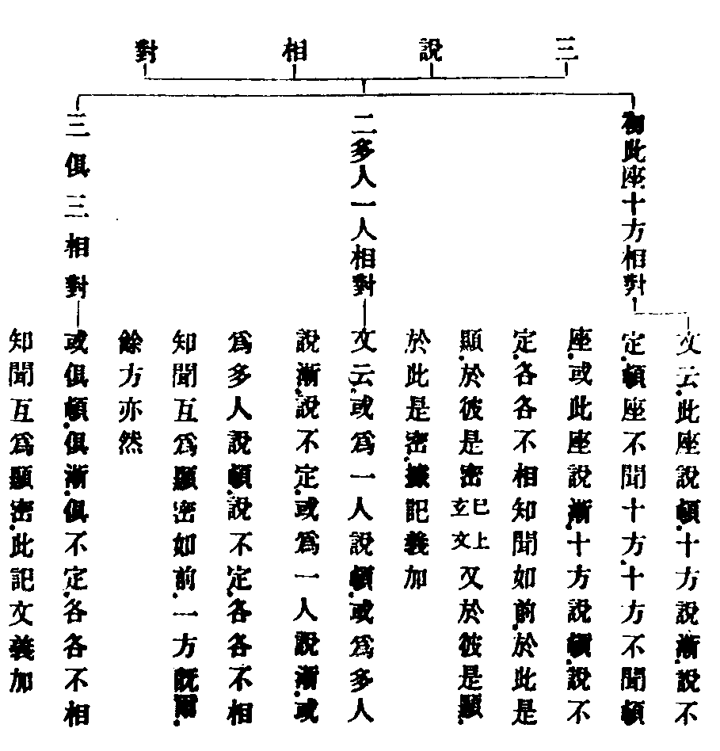
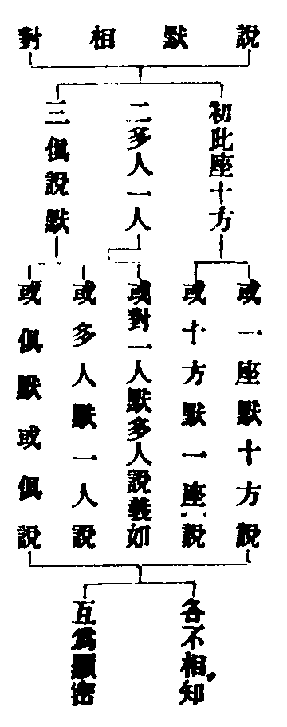
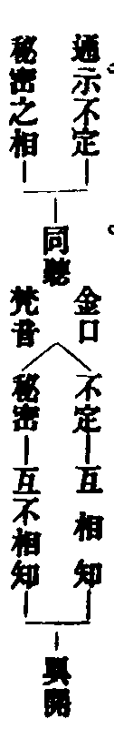
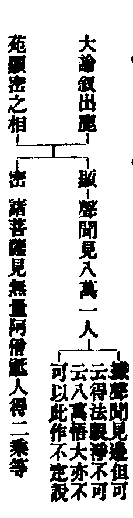
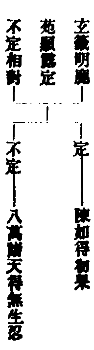
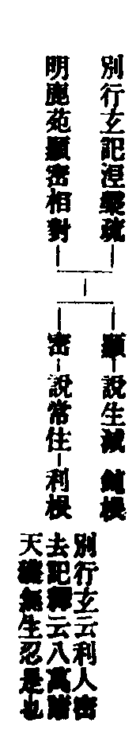
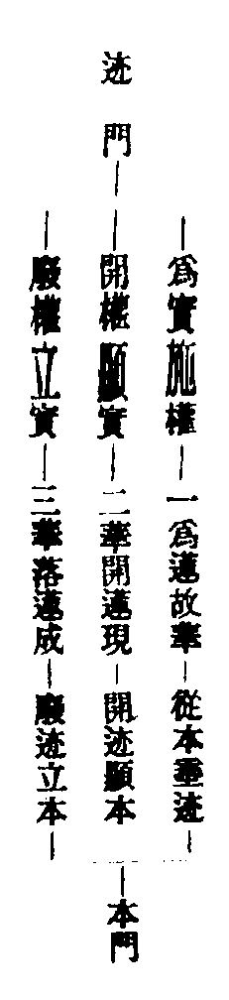

天台四教儀註彚補輔宏記卷二之上
△三秘密教三。初標名。
第三秘密教者。
【□註】隱密赴機。互不相知。故名秘密。釋籤一(二十三)云不定與秘。並皆不出同聽異聞。但互相知。互不相知。以辯兩異(文)。
【■補】同聽異聞者。淨名云。佛以一音演說法。眾生隨類各得解。或有恐怖。或歡喜。或生厭離。或斷疑。斯則神力不共法是也。但彼彼互相知者。名不定。互不相知者。名秘密以辯兩異耳。三界可怖。即世界悉檀。歡喜。即為人。厭離。能治於惡。即對治。斷疑見理。即第一義。
【□註】若不堪於顯露入者。須秘密說。
【■備】謂如來說法時。機有不堪顯露說者。於此是顯。於彼是密。或彼此俱密。故須密說。以秘密。應貼互不相知論也。
【□註】今對前頓漸顯露即明秘密。若大本中先明不定。對前頓漸定教為次第也。此據說相次第雖爾。秘密不定。遍前四時。初無前後。具足應云秘密不定。顯露不定。今皆略標。
【■記】今先秘密而後不定。大本先不定而後秘密。當知俱順其便。下明秘密不定。除法華聞顯。遍前四時。元無前後。
【□註】然秘密之名。起自龍樹。如釋籤一(二十一)引大論釋大品經。諸天子嘆云。我見閻浮提。第二法輪轉。今轉似初轉。問。初轉少。今轉多。云何以大喻小。而言似耶。答。諸佛法輪有二種。一者顯。二者密。初轉。聲聞見八萬及一人。諸菩薩見無量阿僧祗人得二乘。無量阿僧祗人得無生忍。無量阿僧祗人發無上道心。行六波羅密。阿僧祗人得初地。乃至十地。一生補處坐道場。是名為密。(文)故知初見八萬一人。屬顯露攝。秘密者。如次明之。
【■記】此明秘密之名所自。初二句。直示起自龍樹。夫龍樹乃西天第十三祖。圭峰言。豪貴家生。通四韋陀。天地圖讖。誦盡閻浮經論。自謂一切智人。欲謗佛經。大龍愍之。接入龍宮。一夏。但誦七佛經目。方知佛法深妙。悟已還出。化國王婆羅門外道無數。造論數十部。此秘密名。出彼所造大論中也。諸菩薩見下。別釋秘密。其中見得二乘。藏教人也。得無生忍。通教人也。發無上道心別教十信也。行六波羅密。別之住行向也。得初地乃至十地之。別十地也。一生補處。別之等覺也。坐道場者。別之妙覺佛果也。
△二解釋。
如前四時中。如來三輪不思議故。或為此人說頓。或為彼人說漸。彼此互不相知。能令得益。
【□註】如前四時中。指秘密教橫在四時。別無部帙。三輪光明記一(三十)云。身業現化。名神通輪。口業說法。名正教輪。意業鑑機。名記心輪。三皆摧碾眾生惑業。故名為輪。下地不測。亦名三密。
【■補】法數言。身名神通輪者。謂佛說法。先現神通警動眾生機情。令生正信也。口名正教輪者。謂佛說法。令眾生翻邪歸正。依教修行也。意名記心輪者。謂佛說法。先以意輪鑑知根器利鈍。演說無謬也。車輪有摧碾之用。以譬如來三輪摧碾眾生煩惱惑業也三密者。大論云。如來身口意三業或現通或說法。或思惟。皆非菩薩之所思議。故名三密。一身密。謂如來處大會中。眾見佛身。或黃金色。或銀色。或雜寶色。或長丈六。或長一里。乃至現大神變。皆不可思議也。二語密。謂佛說法時。或一里外聞佛音聲。或十百千萬里外聞佛音聲。又一會中。或有聞說布施。有聞說持戒等。各各隨身所聞。皆不可思議也。三意密。謂佛常處寂光。凡思惟觀察。皆不可思議也。三業皆非諸菩薩等之所思議。故言不測。
【□註】或為此人說頓等。妙玄先約頓漸三說相對。次約說默相對。各有三義。謂此座。十方。多人。一人。及俱三相對。

【■記】三中云。此記文義加者即籤文言。既俱默俱說。互不相知。名之為密。何妨俱頓互不相知是也。
【■補】初文於彼是顯二句。乃玉師據釋籤之義而加也。二中如前。一方既爾。餘方亦然等文。亦玉師所加。三中記文義加者。乃籤文所加。

【■記】義加者。此說默相對圖中。初二兩對。玄文未出。釋籤曰。文略耳。既言俱默俱說。理合如前頓漸三法相對。故此圖依義加補也。然妙玄下文曰。各各不相知。互為顯密。雖復如此。未盡如來於法自在之力。但可智知。不可言辯。應知如來三輪不思議化。難以測度。今略判成秘密不定耳。

【□註】如釋籤云。不定與秘。並皆不出同聽異聞。但有互相知。互不相知。以辯兩異。

【■記】聲聞見八萬得法眼淨。不見八萬悟大。然在聲聞。非不定教相。是顯露攝。若對菩薩所見。則成秘密。如圖示。
【■備】有師標曰法眼淨。乃十六心眼。智。明。覺。見斷惑也。十六心。解下藏教。
【□註】此以般若對鹿苑說。即鹿苑中密說般若。義該三教。故云諸菩薩見等也。
【■備】此釋圖示大論敘相。初句總判即鹿苑中。下別指密相。義該三教者。已記前文可知。

【□註】此約鹿苑。聞小證大而說。如籤云。酪中雖無二別。不妨以八萬及一人。以辯定不定也。

【□註】此以法華涅槃對鹿苑說。即鹿苑中密說圓常。與法華涅槃悟入是同。如別行玄記云。若八萬諸天獲無生忍。故云密去。又大疏云。利根人於三藏中宜聞常住。即聞得解。如初轉法輪時。八萬諸天得無生忍。乃是密教意。據此。豈可謂同聽生滅耶。
【■記】此判釋圖示顯密相對。初一句總判。次二句指聞圓常。如別行下指證利人密去。大疏下指證八萬得忍也。別行玄上云三藏中二意。於利根密去。於鈍根成酪。記釋言。三藏但小。故無顯露得大益者。若八萬諸天獲無生忍。故言密去。二乘方破見思。故但成酪。今但證釋密教中利根密去也。又大疏曰。常住者。此非全是六度菩薩。應曰利根於三藏中宜聞常住。聞即得解。如初轉法輪時。八萬諸天得無生忍。最下既然。例餘亦爾。乃密教意。大疏指涅槃疏。據此下凖意。反結鹿苑密聞圓常。故云豈可謂同聽生滅耶。
【□註】問。鹿苑會上。只一八萬諸天。何故諸文。或定不定。顯密有異耶。答。如來赴機難思。祖師釋義非一。據諸天得法眼淨。即顯露定教。如云聲聞見八萬是也。據聞小證大。即顯露不定教。如云八萬諸天得無生忍是也。若曰密聞圓常。即秘密教。如云利人密去是也。經意多含。不可一準。然八萬諸天既是利根。密為正意。蓋於三藏中宜聞常住故也。
【■記】此節料揀諸文說教。定與不定之有異也。據諸天下之文。是釋顯露定教。指大論以證據。聞小證大下之文。是釋顯露不定教。文中舉玄籤為證。若曰密聞圓常下之文。是釋秘密教。指別行玄記為證。
【■備】又籤。問。何妨法華。亦與諸教。十方一席。互為顯密。而云法華是顯。非秘密耶。答。十方容有。一席定無。
【□註】且秘密教何以得傳。如妙樂一(十八)云。秘密不傳。降佛已還。非所述故。尚非阿難能受。豈宏教者所量。(文)蓋因後敘出。故可傳耳。如妙樂云。阿難非不傳秘。赴機之秘非所傳耳。故秘密所用。全是顯教。是故傳秘。祇名傳顯(文)。
此料簡秘密也。初二句直問秘密得傳所以。如妙樂下。舉阿難以況人師不能傳秘。所謂秘密非器不傳也。蓋下。直答可傳之故。如妙樂云下。明阿難不傳秘義。以赴機之秘。唯佛與佛乃能傳耳。是故人師傳秘者。但名傳顯也。
【■備】此秘密教。雖係如來化儀。然赴機之秘。惟佛與佛能之。降此。如阿難尚有未能。況後學耶。
△三結名。
故言秘密教。
△四不定教四。初標名。
第四不定教者。
【□註】蓋一類機。宿世於頓有漸種。於漸有頓種。故今聞小證大。聞大證小。推功歸教。教名不定矣。如大經置毒。發毒。大論八萬諸天得無生忍等。皆不定義。
【■記】大經佛言。善男子譬如有人。置毒乳中。乃至醍醐。皆悉有毒。乳不名酪。酪不名乳。乃至醍醐。亦復如是。名字雖變。毒性不失。遍五味中。皆悉如是。若服醍醐。亦能殺人。實不置毒。於醍醐中。妙玄謂。此譬兩用。一。通約漸頓明不定。處處皆得見佛性也。二。約行明不定。行人心行。譬乳。實相智。譬毒。毒能殞命。智破無明。久遠劫來。說實相毒。置於凡夫心乳。毒慧開發。不可為定。或初味發。或後味發。不得次第往判。故言置毒乳中。乃至醍醐。遍五味中。悉有殺義。
【□註】古師以金光明等。別為一緣。名偏方不定教。今家不然。一時。一說。一念之中。備有不定。
【■記】此指古明今如妙玄云。一時一說一念之中。備有不定。不同舊義。專判一部。故釋籤明南北諸師。通有漸頓不定。不定者。專指勝鬘。及金光明。不同今家判義。味味皆有不定。
【■補】妙玄曰。南師。以金光明。勝鬘。楞伽。殃掘。之流。以別為一緣。為偏方不定教。以不定於頓。不定於漸故。偏方者。清涼疏謂大體而言。漸中。先小後大。說小時。不妨說大。如十年宏律。不妨私室時說大乘。故曰偏方不定。勝鬘。初云波斯匿王與末利夫人信法未久。既言未久。明是初說。金光明。既非第一頓教。又非第二漸中。末後明常住。明是不定是也。會玄云。偏方者。非正所說。名偏。方者。法也。即偏法也。或偏者。傍也。說小時。傍說大故。
△二解釋。
亦由前四味中。佛以一音演說法。眾生隨類各得解。此則如來不思議力。能令眾生。於漸說中。得頓益。於頓說中。得漸益。
【□註】一音者。通大小因果。當分跨節。顯之與密。定與不定。今是不定一音。該乎大小。是果人所用。
【■記】此釋一音而有五雙。今是下。明是不定一音。大小者。謂小乘。一音說四諦。五人聞人語。諸天聞天語。大乘。佛以一妙音。遍滿十方界。眾音悉具足。法雨悉充滿也。因果者。謂下地以一音。令他聞一法。約位。即圓信。別地前。佛以一妙音。隨類各得解。即別地。圓住。當分。成今經相待義邊。跨節。成今經開權義邊。
【■備】小乘一音。應指說小教時。佛但一音說法。各各領解不同。大乘一音。應指說大教時。佛但一音說法。各各領解不同也。因人一音。應指藏通別圓四教諸菩薩等。果人一音。應指四教果頭佛說。原記以圓信。別地前。為因人。以上為果人。或有所本。俟再攷定。當分者。說前四時教。依教領解。是當分。妙玄云。跨節者。若開方便門。示真實相。即向身。是圓常身。向法。是圓常法。向理。是真實理也。顯。密。定。不定。下解。今是顯露不定一音。故該乎大小。惟果人所用也。
【□註】於漸說中得頓益。妙玄云。雖說四諦生滅。而不妨不生不滅等。釋籤云。此指鹿苑。雖施於漸。不起於頓。
【■記】此以鹿苑對華嚴論不定也。妙玄下。正釋生滅即漸。不生滅即頓也。釋籤下。轉釋。謂。如來不起華嚴之頓。而施鹿苑之漸。則鹿苑漸中。具有華嚴之頓。是故於昔有頓習者。今雖聞漸教。而能得頓益也。
【□註】於頓說中得漸益。妙玄云。雖高山頓說。不動寂場而遊鹿苑。釋籤云。此指頓後漸初。不動於頓。而施漸化。
【■記】此以華嚴對鹿苑論不定也。妙玄下。正釋。謂如來初成正覺。演大華嚴。如日初出。先照高山。是故高山為頓說也。既云不動寂場。而遊鹿苑。是為於頓說中得漸益也。釋籤下。轉釋。謂華嚴頓教之後。阿含漸教之初。乃是不動於頓。而施漸化。其如眾生不了漸中有頓。是故但於頓邊得漸益也。
【□註】若方等般若。雖為菩薩說佛境界。而有二乘智斷。此二時中。俱有小果。新得舊得。如常所明。
【■記】此以方等般若之說大。對鹿苑論不定也。謂為菩薩說佛境界。即垂頓教。而有二乘智斷。即得漸益。尋常所明二時中小果者。謂新得。即方等中新受小者。及般若衍門傍得小者也。又有一類橫來之眾。未得通益。至是二時。名為舊得小果者。是也。
【■備】橫來之機當是方等新得。被彈斥者。方等舊得也。衍門傍得。是般若新得。妙玄一云。雖三人俱學。二乘取證。此指般若舊得也。
【□註】雖五人證果。不妨八萬諸天得無生忍。此重指漸初對般若說。前文約法。此中約人。
【■備】此復以鹿苑初漸。對般若論不定也。前華嚴鹿苑對論。乃約頓漸二法。此中鹿苑。方等。般若。同是漸教。故約人對辨也。
【□註】當知即頓而漸。即漸而頓。
此勸知頓漸相即也。謂頓乃即漸之頓。漸乃即頓之漸。漸外無別頓。頓外無別漸。唯其即頓之漸故。所以令其於頓有漸種者。聞大得小益也。唯其即漸之頓故。所以令其於漸有頓種者。聞小得大益也。
△三結名。
如是得益不同。故言不定教也。
此結不定教名也可解。
△四合明二教只是化法。
然秘密不定二教。教下義理。只是藏通別圓。
【□註】上指四時為秘密不定之部。今明部中之教。故此二教。以藏等四教。為當體體。真中二理。為所依體。
【■記】此指上明今。如輔行云。頓等四教。是如來不思議力。布措藏等。盈縮調停。成熟物機。破邪立正。引小歸大。廢偏顯圓。會權入實。故有諸部相生。是知秘密不定。以藏等四。為當體體也。又藏等詮理。不出真中。故真中二理。為秘密不定所依之體也。
【□註】如妙樂一(十九)云。不定秘密。義各含四。顯之與密定與不定。相對論故。
【■記】此證釋上義頓漸二教。均顯均定。秘密不定二教。一密一不定。既對頓漸而論。故各含藏等四教。
△二結前生後二。初結前四教齊文。
化儀四教齊此。
【□註】此以法華相待之意。判前四時。不出頓等八教。意顯法華。超八教外。出四時表。
【■記】此釋結教齊前四時也。蓋相待論判。故判前四時不出頓等八教。意顯法華非頓。非漸。非秘密。非不定。無復兼。但。對帶。超八教外。出四時表。乃五時極唱。最後極談。純圓獨妙之教也。
【■備】超八教者。經曰。久默斯要。不務速說。直至四十餘年之後。非頓也。正直捨方便。但說無上道。無二亦無三。非漸也。九界咸開。無不成佛。非密也。今正是其時。決定說大乘。非不定也。既非化儀四教。即超化法四教。以開顯圓。非隔歷圓也。
【■備】辨訛曰。若言超八教外。則兩種四教。有攝法不盡之難。然此。亦對前四時而言超耳。開顯之圓。不同前來隔偏之圓。會漸歸頓。異前擬宜兼權之頓故云超耳。雖超而即。何攝法不盡之有。
【□註】故釋籤一(十六)科玄文云。初明八教以辨昔。次約今經以顯妙。
【■補】此證上判麤顯妙。謂昔於四十年前。所說之法。而以八教辨之是麤。今即是法華。既出教之外。顯是絕待之妙也。八教者。籤言。初五味。次不定。三秘密。即八教也。五味。即頓漸。漸中開四。并不定等二。即為八也。次明今經顯妙者。如玄文言。今法華是顯露。非秘密。是漸頓。謂開漸顯頓也。非漸漸。謂非法華前漸中之漸也。是合。非不合。合。是會之別名。開顯之圓。故云是合。不同諸部之圓。故云非不合也。是醍醐。非四味。是定。非不定。如此分別。故此經與眾經異也。
【□註】若釋籤一(十七)云。秘密橫被。無時不遍者。此約方等對前二時為言。老彼問辭自見。
【■記】此通釋籤。秘密無時不遍之文。
【■補】釋籤曰。問。華嚴鹿苑。大小永隔。纔說方等。同座並聞者。何耶。答。若以秘密橫被。無時不遍。若約橫論竪。則隱顯在機。私謂。釋籤言秘密橫被。無時不遍者。言通義別也。此但指三時中。不通第五。何以知然。考彼問辭。只約前三對說。意謂豈前二時。大小相隱。而有秘密。當知方等。四教相對。亦有秘密。故言無時不遍。此約味味橫論。若約此橫以論三時之豎。前二味大小相隔。隱也。方等同聞。顯也。此乃在機。非關教也。
【□註】又釋籤十(二十四)云。五味則一道豎進。味味有半滿相成。復於味味皆有秘密。及以不定。(文)蓋約五味對半滿。以論相成。故玄文云。雖復俱遊。行藏得所(俱遊論相成行藏論用捨)。
【□註】華嚴唯滿不半。乃至法華廢半明滿。半有成滿之功。非謂味味各有半滿。又云。味味皆有秘密不定者。此且據前四時為言。或顯密相成。則以昔時秘密不定。成今法華。是顯。非秘密。是定。非不定矣。
【■備】此通釋籤味味皆有秘密不定之文。今先通味味半滿相成。以比知皆有秘密之文。不可泥解。蓋乳等五味。自華嚴至法華一道豎進。然此五味中均有半滿相成者。如玄此云。今明五味。不離半滿。半滿。不離五味。五味有半滿。則有慧方便解。半滿有五味。則有方便慧解。權實俱遊。如鳥二翼。雖復俱遊。行藏得所。若華嚴頓滿。大乘家業。但明一實。唯滿不半。於頓成乳。三藏客作。但是方便。唯半不滿。於漸成酪。方等彈訶。半滿相對。以滿斥半。於漸成生酥。般若領教。帶半論滿。半為二乘。滿為菩薩於漸成熟酥。法華付財。廢半明滿。若無半字方便調熟鈍根。則亦無滿字。開佛知見。於漸成醍醐。是則半有成滿之功。所以如來殷勤稱歎方便者。良以半有成滿之功也。意在於此。非謂味味各有半滿也。若泥定味味有半滿之語。則華嚴唯滿不半。及法華廢半明滿等。如何消通。故以味味半滿。比知味味皆有秘密不定者。且據前四時置毒發毒。皆得會入醍醐而言。或約顯密相成說者。則以昔四時之秘密不定。成今法華之是顯。非密。是定。非不定。更了然顯明矣。
【■記】俱遊者。涅槃經曰。鳥有二種。一名迦鄰提。二名鴛鴦。遊止共俱。不相捨離。乃至選擇高原。安處其子。然後隨本安穩而遊。如來亦復如是。化無量眾生。令住正法。乃至所作辦已即便入於大般涅槃。
【■備】今以譬五味半滿相成之意。行藏論用捨者。謂華嚴用滿。鹿苑用半。乃至法華廢半明滿。如鳥之行藏也。
【□註】妙玄六(二十)引大論云。餘經非秘密。法華是秘密者。釋籤七(十三)云。非八教中之秘密。但是前所未說為秘。開已無外為密。
【■記】此釋法華是秘密義。大論囑累品云。般若非秘密法。法華說阿羅漢受決作佛。大菩薩能受持用。如大藥師。以毒為藥。是文正明法華秘密。今何謂說法華是顯非秘耶。釋籤下。明論說法華是密意。正所謂久默斯要。不務速說者。秘也。開昔所說。總成圓妙者。密也。是則上云法華非秘密者。謂非八教之秘密也。經經皆爾。豈可以龍樹別意。通害諸經乎。故法華是秘密非秘密。蓋各有取義耳。
△二生後四教俱非二。初明法華開顯非四教攝四。初開顯二。初正明三。初總明今昔二。初開權顯實。
次說法華。開前頓漸。會入非頓非漸。故言開難顯實。又言廢權立實。又言會三歸一。
【■註】妙法難解。取喻蓮華。蓮華。華果同時。妙法。則權實一體。故有迹門三喻。本門三喻。
【■記】實相妙法譬蓮華者。妙玄云。華有多種。例法有麤妙。狂華無果。喻外道空修梵行。無所剋獲。一華多果。喻凡夫供養父母。報生梵天。多華一果。喻聲聞種種苦行。止得涅槃。一華一果。喻緣覺一遠離行。亦得涅槃。前果後華。喻須陀洹却後修道。前華後果。喻菩薩先藉緣修。生後真修。皆是麤華。不得為喻。蓮華多奇。可譬妙法。為蓮故華。華實具足。可譬即實而權。華開蓮現。可譬即權而實。華落蓮成。蓮成亦落。可譬非權非實。如是等種種義便。故以蓮華喻妙法也。末二句。示有本迹六喻。如下圖示。此初約部教也。

【■記】迹門為實施權者。經云。知第一寂滅。以方便力故。雖示種種道。其實為佛乘是也。開權顯實者。經言。開方便門。示真實相是也。廢權立實者。經言。正直捨方便。但說無上道是也。本門從本垂迹者。經言。我實成佛已來。久遠若斯。但教化眾生。作如是說。我少出家。得三菩提是也。開迹顯本者。經言。一切世間。皆謂今始得道。我實成佛已來。無量無邊。那由他劫是也。廢迹立本者。經言。諸佛如來。法皆如是。為度眾生。皆實不虗。是也。
【■補】天台分法華為本迹二門。從序品。至安樂行十四品。約迹門顯實。從湧出品。訖經十四品。約本門顯實。以今一代化事為迹。久遠最初成道為本。本如所依處。迹如所行路。
【■註】妙名一唱。待絕俱時。故相待論判。出前三教四時之上。絕待論開。復能開前令皆圓妙。今文但云開者。蓋上既云化儀四教齊此。則顯法華出前四時。況復下文歷部揀教。即是判也。然待絕二妙。妙體無殊。約義而論。開為正意。
記此釋能開之妙。初二句。總示待判絕開。今文下。明但開不判。然待下。釋開為正意。言妙者。相待妙。絕待妙也。然相待時。即絕待時。故曰俱時。此節釋開前頓漸開字也。法華具相待論判。絕待論開二意。今但論開者。以開為正意。下文歷部揀教即是判者。指華嚴時一權一實等文。待絕二妙體本無殊者。玄文云。乳教中圓。與今圓不殊。方等般若中妙。與今妙不殊。故頓部一妙。則與法華無二無別。諸味圓教。本自圓融。然而約義。則有兼但對帶之麤。必當開顯令妙。故曰開為正意。
【■補】相待論判者。待前四時麤。顯今一乘妙也。出三教四時上者。以昔諸經兼但對帶。不若法華純圓也。絕待論開者絕前諸麤。無可形待。以法華之妙。有絕麤之功。所以論開。妙外無麤。麤即是妙。如經言。決了聲聞法。是諸經之王。指二乘所行。是菩薩道。更無餘乘。直顯一實。故曰開前令妙等也。然此二妙。缺一不可。若非相待以判。則不顯法華超過之說。若非絕待以開。則不知法華妙一切法。
【□註】凡論開權。有約部。約教。約界。約理等。今云頓漸者。乃約部通開。頓漸是權。屬前四時。非頓非漸是實。即今法華。又三即是權。一即是實。故以開廢會三而結云。故言開權顯實等也。
【■記】此釋所開部教。初一行總示權實有四。謂約部。約教。如次。約界者。開九界之廣。顯佛界之高。故云九界咸開無不成佛。約理者。開生滅無生無量之機顯無作之實。故云開方便門。示真實相。今云下正明開部。謂一頓三漸皆權。法華不務速說。故非頓。但說無上道。故非漸。此即是實也。又三下。明開部中之教。謂藏通別既權。故當開之廢之會之。圓教既實。亦當顯之立之。以歸於一也。
【■備】辨訛引統紀載集解曰。四時三教。咸為所開。不同華嚴聾啞。故非頓。不同三時次第。故非漸。今經開顯。無不成佛。故曰會入非頓非漸。
【□註】開者。發也。拓也。昔不言三是方便。故方便門閉。今言三是方便。故方便門開。廢者。捨之別名。開已俱實。無權可論。義當於廢。約法。乃開時即廢。約喻。必義須先開。若約理者。開廢俱時。開時已廢故也。
【■記】此釋開廢。
【■備】昔權隱實故閉。今於權見實。知是如來方便之力。於一佛乘分別說三。方便門開也。廢則權即是實。二乘所行是菩薩道。無權可論也。然約佛化法。既開於實。即座於權。約喻。則華開蓮現。義須先開。若約實理。理絕先後。即開即廢也。
【□註】或謂。今文開廢會三。準彼玄籤第一。對於四一。義雖無妨。但在彼不對。其文則重。在今但作結上開部。義似稍允。蓋法華部開廢會三。法應爾也。如下文云。總開會廢前四味麤。
【■備】此揀異解玄籤對四一者。玄序曰。蕩化城之執教。廢草庵之滯情。籤判是教。開方便之權門。示真實之妙理。籤判是理。會眾善之小行。歸廣大之一乘。籤判是行。上中下根。皆與記莂。籤判是人。蓋以廢會等三。合上中下根。而對四一。然在彼不對。文似重說。今文無須對於四一。但作結上開部。義允常也。
【■記】下曰。來至法華。總開廢會前四味麤。令成一乘妙。故作結上義為當。
【□註】舊於開權。有同體異體之辨。然約所開法體。及能開之妙。佛意邊論。皆同體也。但所開機情。在昔執之為異。故不得不開。如釋籤云。法本自妙。麤由物情。但開其情。理自復本。又玄文云。開昔之異。顯今之同。故開機情。的開異體也。
【■記】此辨同體異體。如釋籤云。有謂圓與三教。彼此歷別。言開權者。開此三教之異體也。若今圓與昔圓無二無別是同體者。則不須開。此約教別與之意也。有謂不但開異體。亦開同體。此約部通奪之意也。然今論所開法體者。即前四味所談藏通別之法也。能開之妙者。即今法華純圓之妙法也。然佛意邊皆同體者。經言。諸佛世尊。以無數方便演說諸法。是法皆為一佛乘故。故同體也。但所開機情。執為異者。如迦葉言。世尊往昔說法既久。我時在座身體疲懈。但念空無相無作。於菩薩法。遊戲神通。淨佛國土。成就眾生。心不喜樂。此執異之情。須開也。下引釋籤玄文。證機情邊論的開異體也。
【■備】翻譯名義集法寶眾名章中。有同異體辨。
△二權實名通。
言權實者。名通今昔。義意不同。
【□註】權。謂權謀。暫用還廢。實。謂實錄。究竟指歸。昔有偏圓自他權實等義。今有為實施權開權顯實等義。義不同也。在昔權實各趣。在今權皆趣實。意不同也。妙樂十(三十三)云。權實之語。非獨今經。相即之言。出自於此(文)。
【■記】此釋今昔權實義意不同。如志師云。前之三教。權實不即。大小相隔。法華權實不二。權即是實。實即是權。此義不同。昔經權實。隨順機宜。悉檀逗會而已。今經為實施權。意在於實。開權顯實意在於權此意不同也。妙樂云。諸經說權智者。權不即實。致令教法皆非自在。諸機不融。故教主別爾。諸經明實智者。是權外實。故破疑不遍。不及此經說施權意。已破諸惑。故言即實而權。況復今經。本為顯實。有疑皆斷。故曰即權而實。所以權實。非獨今經。相即。出自於此。
△二列昔權實二。初總指頓漸隔異。
謂法華已前。權實不同。大小相隔。
【□註】此下釋出今易權實。義意不同。文初約部通開。故以頓漸為權。法華為實。此揀昔日部中之教。有權有實。然在昔實妙權麤。在今開麤即妙。方顯義意不同也。今且先明昔之權實。故曰謂法華已前。權實不同等。
【■記】文初約部。故法華非頓非漸。名一實。前四時頓漸部帙。通名為權。此則揀昔部中之教。有權有實。如華嚴一實兼一權等。然昔教權實麤妙。兩分不同。今經。麤即是妙也。今且下。先明昔之權實。為下開顯之本。
【□註】權實約偏圓。大小約半滿。亦可權實約法。大小約人。在昔之時。皆有此義。
【■記】此釋權實大小之義。而有二對也。一理喻一對。謂偏小之理為權。圓滿之理為實。半字喻小。滿字喻大。二人法一對。謂三乘教法為權。一乘教法為實。諸佛菩薩為大人。聲聞緣覺為少人。又輔行釋大小半滿言。先須分別通途言之。謂大小者。或指衍中三教因人。或指藏教三乘之人。大中大者。或指三教果頭人。或指圓教因位人。或唯指圓極果人。小中大者。或指三藏菩薩人。或唯指於佛果人。大小既然。半滿亦爾。
【□註】然文意正明昔部權實。而復明大小者。須知權通偏教。而未的顯權中三藏小機。歷前四時。與大相隔。直至法華。方得入圓。故論權實。復明大小。雖明大小。不出權實。如下(文)云。重舉前四時權。蓋指此小機也。
【■記】此釋復明大小之意。初二句。推意牒文。須知下。勸辭。權通偏教者。謂通其藏通別之三教。既是如來權巧垂示。故可稱偏也。權中三藏小機者。的指歷前四時之鈍根也。法華入圓者。舍利弗言。今日乃知真是佛子。五百弟子言。我今乃知實是菩薩等也。故於權實之外復明大小。則義方周足矣。
如華嚴時。一權一實(圓實別權)各不相即。大不納小。故小雖在座。如聾若啞。是故所說法門。雖廣大圓滿。攝機不盡。不暢如來出世本懷。
【□註】一權一實。釋權實不同。大不納小。釋大小相隔。今此正當大隔於小。故小雖在座。如聾若啞。釋籤一(十一)云。華嚴。大機尚隔於別。小機被隱。一向不聞。是故但立頓大之名。不立一乘獨妙之稱。非佛本懷。良由於此。華嚴頓大。尚非本懷。況復鹿苑。故三藏教首。及以部內麤尚未周。故妙號都絕。方等般若。比說可知(文)。
【■記】此明華嚴頓大之教。若對法華尚隔於別。又以小不聞大。不立一乘獨妙之稱。故不暢佛本懷也。三藏為首者。三藏為四教首。乃淺中之淺。豈可稱妙。及以鹿苑會上。部內所詮即通之麤。尚且未周。況圓教之妙。故妙號都絕。都絕者對不絕而言。以乳。及二酥。若約部通奪。則非本懷。如約教別與。亦容有妙。故未都絕也。
△二麤法須開顯。
所以者何。初頓部有一麤(別教)一妙(圓教)一妙。則與法華無二無別。若是一麤須待法華開會廢了。方始稱妙。
【□註】所以者何。此徵起釋出不暢本懷之意。皆由在昔不能開麤顯妙。故此以下歷部揀教。明判明開。
【□註】初頓部等。於此別明頓中麤教。須待開會者。以時人謂華嚴勝故也。
【■記】此判華嚴一麤。時人。指宏賢首宗法師。華嚴鈔云。法華疏嘆身子三請。云餘經無此殷勤之請。唯華嚴解脫月菩薩。請金剛藏。可為連類。而彼因人。請於因法。此請佛慧。故亦不同。今番法華。劣於華嚴。謂彼是一家請。此是三家請。彼是聲聞請。此是菩薩請。彼唯三請。此有五請。彼唯因人請。此有佛請。便謂華嚴勝於法華。故釋籤云。自古弘經諸師不曉佛意。見華嚴事廣文長。菩薩致請。謂華嚴加勝法華。近代已來讀山門教者。仍有此說。人師但以請主勝劣相形。不曰法華觀智勝此。而近代匠者。以教體謂勝法華。豈非悞耶。是故今文判後。遂開其一麤。以顯法華獨妙絕圓也。
【■備】此指古師華嚴鈔。非清涼師之疏鈔也。辨訛曰。此是觀師破的之論。荊溪云。佛說華嚴。一不攝小機。二不開權。三不發迹。故未暢本懷。清涼從荊溪習學。故解華嚴時。全將法華開顯圓意會入。如玄談以教起因緣為初。即言如來為一大事因緣出現於世。欲令眾生開示悟入佛之知見。釋妙嚴品初。始成正覺。即將法華久成之意點入。處處將開顯圓會入。始末皆然假若法華不來此土。則釋此經者。全昧開顯。何能轉麤成妙乎。私謂華嚴經文。亦微逗一二語發迹。但不若法華明顯全彰。故荊溪判為未發迹也。清涼大師既知開顯。疏華嚴理合如斯。來哲但當以精研教觀為務也。
△二判三漸。
次鹿苑。但麤無妙(藏教)次方等。三麤(通藏別)一妙(圓教)次般若。二麤。(通別)一妙。(圓教)。
【□註】此約相待判前部中麤妙也。
此斷文判前三漸可知。
△三今經獨妙二。初開昔部二。初開偏麤成妙。
來至法華會上。總開會廢前四味麤令成一乘妙。
【□註】此開前四味重中三教之麤。成今一乘妙也。且昔部中三教權人。來至法華。一向須開。若三教權果。本是圓果。豈可更開令成圓佛。若對機之權。亦不妨論開。如云開丈六垢衣等也。
【■記】初一行。明開麤教成妙。統紀云。開前四味麤。會前四味麤。廢前四味麤。故冠一總字。曰開會廢也。前四時兩教二乘。三教菩薩。人教理行。差別之麤。至今法華。咸皆微妙。故云成一乘妙也。且昔部中下。明開麤人成妙。言三教權人。一向須開者。以其所稟麤教既開。故其能稟麤人亦當開也。蓋由依麤教修行。作能造至三百四百由旬而已。終未能至寶所故。所以一向須開也。三教權果不開者。妙玄云。何處別有四教主。各各身各各口說也。當知只隱其無量莊嚴之身。現為文六身耳。若開方便門。示真實相。即向身是圓常身也。
【■補】對機之權論開。如云開垢衣等者。妙玄云。體化他之權實。即自行之權實。如垢衣內身。實是長者。體自行化他之權實。即自行之論。如一切治生產業。皆與實相不相違背。一色一香。無非中道。況自行之實而非實耶。
△二開昔圓成妙二。初本融故妙。
諸味圓教更不須開。本自圓融。不待開也。
【□註】且昔部中。三教既開。昔部中圓。還須開否。故下即云諸味圓等也。以今圓昔圓。二圓不別。此約教別與也。
【■補】此明昔圓本妙。初一行。舉偏問圓。次故下。答。末三句。斷釋昔圓本妙不開。統紀云。在昔圓頓不須更開者。華嚴。心佛眾生三無差別。大集。染淨一切融通。淨名。不思議毛孔含納。思益網明。無非法界。般若。諸法混同無二。此等圓理。與法華佛之知見。無二無別。豈可更開耶。
【□註】若妙樂云。圓人初心。須聞開顯諸法實相者。蓋昔圓人。義有兩向。名字初心。謂圓隔偏。聞佛開權。隔偏情泯。非開圓體也。若觀行去已入實者。但論增進。如經揀眾云。除諸菩薩眾。信力堅固者。是也(信力五品堅固十信)。
【■記】此釋圓人初心須聞開顯之文。兩向。謂昔圓隔偏今圓不隔。故名字即人。由聞開權。隔偏情泯。如經下。引證。信力菩薩。即觀行位。已圓伏五住。堅固菩薩。即十信位。已破見思塵沙。故此但論增進也。
【□註】又妙樂云。今經是圓。復須開顯者。蓋顯法華中圓。非但出前四時。復須開顯諸教也。
【■記】此引釋法華是圓。復須開顯之文。謂法華純圓獨妙。非但逈出四時。又能開顯頓漸諸教。今成圓妙。
△二唯今稱妙。
但是部內兼但對帶。故不及法華純一無雜。
【□註】正判昔部屬麤。除鹿苑外。雖皆有圓。以兼等故。不得稱妙。麤人細人。二俱犯過。此約部通奪也。
【■記】此釋成昔圓部麤。謂華嚴兼一麤。方等對三麤。般若帶二麤。是故昔圓猶可思議。不得稱之為妙。故其麤人。有隔細過。不及純圓獨妙也。
【■備】補遺曰麤人細人。此句出大論。麤人則麤罪。細人則細罪。今借以比用。
【□註】釋籤一(十)云。始自華嚴。終至般若。雖名不同。但為次第三諦所攝。今經會實。方曰圓融(文)。
【■記】此證釋昔麤今妙。次第三諦者。真諦掃蕩。俗諦建立。中諦雙遮非真非俗。次第造修。三諦不紊。昔時部帙。為其所麤也。圓融三諦者。真俗中三。同時相即。不前不後。絕思絕議。今經開會一切諸法。故云方曰圓融。
【□註】是故文初。約部通開。須云開前頓漸等也。
此結申文開權之意。
△二顯今部二。初能開得名。
獨得妙名。良有以也。
【□註】如上相待論判。絕待論開。約教別與。約部通奪。翻覆抑揚。方顯法華出諸教上。部圓教圓。妙絕羣經。出世本懷。於此暢矣。故即引經四一為證。
【■記】此承上文頓部一麤一妙等。相待論判也。來至法華總開成妙。絕待開論也。別與通奪。見上。
△二引證純一。
故文云。十方佛土中唯有一乘法。無二亦無三。(教一)正直捨方便。但說無上道。(行一)但為菩薩。不為小乘。(人一)世間相常住(理一)。
【□註】以純一故。獨得妙名。故引一以顯妙。蓋一即妙也。
【■記】輔行言。四一名出光宅。今家和舊。亦作四一。舊言果一。今曰理一。若無理印。則同魔說。舊言因一。今言行一。因語則單。行通因果。人教二一。與舊不殊。
【□註】十方佛土等。據其同者而言。亦約佛意也。一乘法者。部圓教圓故。無二亦無三者。約數。則無通教半滿相對之二。無三藏之三乘。無有餘乘。即無別教。及圓入別也。約部。則無般若所帶之二。無方等所對之三。方等之藏。則攝鹿苑。二酥之別。則該華嚴。唯一佛乘。故云教一。
【■記】此釋教一。十方佛土有二意。一。據其同者而言。謂虗空無邊。世界諸佛國土亦復無邊。其中化導。各隨機宜。或以一乘而被下。或以三乘而應諸。今云十方佛土。據其同演一乘法者言也。二。約佛意。謂諸佛本意唯以一乘佛道。王於所化之土也。無二無三。有二釋。一約教。通教。通前藏教之半。通後別圓之滿。今經獨妙。絕諸對待。故無半滿相對之二也。今經但為教大菩薩。故無聲聞弟子。無三藏之乘也。別教。但為積行菩薩。及一類圓機入別。歷劫修行。次第行布法門。今經圓修圓證。故無別教及圓入別之餘乘也。二約部。今經非對非帶。故無方等所對之三。般若所帶之二也。又方等之藏攝三藏。二酥之別攝華嚴。可解。
【■備】辨訛曰。據其同者句。似更有不同者矣。私謂。佛意則無不同。今論機邊。集註特加此語。如古然燈。尚不說法也。辨訛又曰。一乘法。應釋言縱有施權。無不顯實。故言唯有一乘耳。無有餘乘。準經偈中無無有餘乘。而疏長出者。乃反文。以釋唯有一乘句。補出別教。長出應指長行。
【□註】正直捨方便。但說無上道者。文句五(五)曰五乘是曲而非直。通別偏傍而非正。今皆捨彼偏曲。但說正直一道也。(文)疏據說邊屬教一。今據道名能通。故屬行一。
【■記】此釋行一。謂五乘是如來曲巧隨宜之說。而非正直之談。又令二乘斷煩惱。而證菩提。離生死。而得涅槃。皆是曲而非直矣。通別偏傍等者。謂通教。旁為二乘。別教。偏為菩薩。故云偏傍而非正。今經捨彼通別之偏。五乘之曲。但說純圓。正直一道。即無作之妙行也。或謂疏釋此文為教一。今何言行一。故云疏據說邊屬教一。以聖人言說名教故。今從道有能通義。故屬行一。以行趨進。與道能通。其義同也。
【□註】但為菩薩者。約佛意。但為菩薩。據昔方便。謂教化三乘。今此同一菩薩人。故云人一。
【■記】此釋人一。謂約佛實意雖復說三乘。但為化菩薩。然據昔日以權巧方便。說諦緣度法。化上中下人也。然而在昔可有三乘人別。在今同一菩薩因人也。
【□註】世間相常住者。十界依正隔歷差別之相。名世間相。以即理故。皆常住也。若乃情見。生滅遷流。廓爾情忘。諸相常住。常既即性。非常無常。言偏意圓。斯之謂矣。學者於此。宜解會焉。
【■記】此釋理一。謂若四聖若六凡。若國土之依。若眾生之正。彼彼殊形異狀。名世間相。似即理故。相皆常住。是則鳥鳴花笑。風動塵飛。法法亘古亘今。頭頭無遷無變。所謂有佛無佛。性相常住也。然道眼觀之乃爾。若乃情見分別生滅。則國土成住壞空。眾生生老病死。皆由妄惑。故有遷流。故云一翳在目。空華亂墜也。若能即解。即行。返聞自性。一旦廓爾情忘。諸相常住者。
【■備】謂根不逐境。境不牽心。根塵脫粘。分別不起。旋轉妄流。復歸真性。性既寂然相亦常住。剎剎塵塵。法住法位。而於法住法位中。無相即相。相即無相。非相非不相。非住非不住。言思路絕。遮照同時。方證諸相。真常住理。當於靈光獨耀。迥脫根塵。絕後再蘇時證之。忽自契悟。非思量分別所能解也。此與宗門悟境相同。故古云但盡凡情別無聖解也。若法華文句。則以佛生皆以如為位。皆以如為相。故世間相常住。記中則以清濁波。與濕性不異。同以濕性為波。故皆以如為相。同以波為濕性。故皆以如為位釋之。
【■記】夫常無常。是兩頭語。而此中道理性常住之常。不在兩頭。乃非常非無常。雙遮之中道也。若以言論。言有則失無。論此則遺彼。若以意會。舉邊則攝中。思內則該外。故知言偏。而意圓也。總之言求。則頭頭錯過。智會。則法法露呈。故宜忘情泯。解冥會之可耳。末二句勸解可解。
【■補】會義有三種世間。一正覺世間。二眾生世間。三器世間。此三當體是理。理性本無生滅。故一一無非常住。一一無非法位。但眾生迷闇。不能覺知。於常住中。妄見生滅。於真如中。妄見遷流。故世間相雖常住而不知也。唯我大覺世尊。坐於道場。如實知已。於不可說。離諸戲論。寂滅理性。能以方便。說此理一。既三世間相皆常住。故理是一也。問。悟此理性。名為正覺世間。以順性故。性相俱常可也。迷此理性。而為眾生世間。既迷性故。性雖本常。相未必常。云何眾生器世間相。亦常住耶。答。若冰與水。同以濕為性。濕常氷亦常。復如醉見屋轉。屋本不轉故也。一切眾生。但有理常。聞而能解。為名字常。念念體察無間。名觀行常。麤垢先落六根清淨為相似常。豁然開悟。證四十一位真因。為分證常。圓滿顯發。無欠無餘。為究竟常。
【■備】辨訛引管標曰。諸法以如為體。達此如體。三際不隔。十方無礙。雙離八倒。即性真常。言偏意圓者。謂意出於常無常之外。又舉一常。則該樂戎淨。故意圓也。
△二斥非。
時人未得法華妙旨。但見部內有三車窮子化城等譬。乃謂不及餘經。蓋不知重舉前四時權。獨顯大車。但付家業。唯至寶所。故致誹謗之咎也。
【□註】當代宏教之人。未解法華開權絕待微妙旨趣。但見經中有三車等喻。乃謂不及華嚴等經。蓋不知三車等喻。乃重舉昔日之權。意在指權即實。故舉三車。顯大車。窮子。付家業。化城。至寶所。不知此意。故有謗法之愆也。
【■記】此總釋當代弘教之人。三車。乃昔日之權。意在今經開之即實。故重舉三車。窮子。化城。以顯今是大車。今付家業。今至寶所也。
【■備】辨訛曰。三車等。等字。指七喻出法華論。凡喻必約權實明施開等。以顯一化。方在其數。有云九喻者。非。
【□註】三車。羊車。譬聲聞乘。鹿車。譬緣覺乘。水牛車。譬菩薩乘。即鹿苑三乘也。
【■記】此明三車譬法。如經云。若有眾生。從佛世尊。聞法信受。殷勤精進。欲速出三界自求涅槃。是名聲聞乘。如彼諸子。為求羊車。出於火宅。若有眾生。從佛世尊。聞法信受。殷勤精進。求自然慧。樂獨善寂。深知諸法因緣。是名辟支佛乘。如彼諸子。為求鹿車。出於火宅。若有眾生。從佛世尊。聞法信受。殷勤精進。求一切智。佛智。自然智。無師智。如來知見。力無所畏。憫念安樂。無量眾生。利益天人。度脫一切。是名大乘。菩薩求此乘故。名為摩訶薩。如彼諸子。為求牛車。出於火宅。
【■備】自然慧。文句云。從十二因緣門入。此門本有。非佛天人所作。名自然慧。如覩花開落而悟道也。科註云。聲聞不能化他。如羊不顧後羣。別行疏云。支佛譬鹿。猶有回顧之意。百松講錄云。一切智者。即內外法。無不曉了。此是因中所修。佛智。是果上所剋之智。即三藏果頭所得。自然智。是後施化所起之智。以其能因機說教。機教稱適故。無師智。以小乘所明。但得一佛化世。更無有能為佛之師者。十六智見。十力。四無所畏。法數內廣明。講錄又云。譬牛者。牛有久久運重之力。皆化他之功也。
【□註】化城。文句七(十八)云以神力故。無而欻有。名之為化。防非禦敵。名之為城。(文)譬真諦涅槃能防見思也。
【■記】此明化城譬法。如經云。如彼導師。為止息故。化作大城。是為無而忽有名化也。淨名疏云。佛法如城。能為行人防非禦敵也。真諦涅槃者非第一義諦大涅槃。以大涅槃。非化作故。不專禦敵。理性即故。具眾德故。且此真諦涅槃。但離虗妄見思。名為解脫。其實未得究竟解脫。故以化城譬之也。然此化城一喻。乃為定性人說。論言。實無。為有增上慢人。以世間有漏三昧。三摩拔提。實無涅槃。而生涅槃想。如是顛倒。取對治此。故為說化城喻也。見思解四卷。
【□註】寶所。譬寂光。大經中名寶渚。
【■記】此明寶所譬法。蓋寂光乃諸佛所依真淨土故。故以五百由旬寶所譬之也。寶渚者。即德王品明第七功德中。指四法作涅槃因。一親近善友。二專心聽法。三繫念思惟。四如法修行。釋第二專心聽法中云。譬如估客。欲至寶渚。不知道路。有人示之。其人隨語。得至寶渚。多獲珍寶。一切眾生亦復如是。欲知善處。採取道寶。不知途中通塞之處。菩薩示之。眾生隨已。得至善處。獲得無上大涅槃寶。以是義故。聽法因緣。則得近於大般涅槃。寶所寶渚梵音楚夏耳。
【□註】前四時權。且三車等。指昔三藏三乘。而云重舉前四時權者。須知三周開顯。藏圓相對。雖正開小機。然舉昔之權。則該四時。又此小機。歷前四時。名四時權也。妙樂五(十三)云。立一開權之言。於今乃成二意。一者騰昔施權。二為顯實之所。不指所開。無由說實。況指權是權。知非究竟。既顯實已。權全是實(文)。
【■記】此釋重舉前時之言。初一行牒妨。謂前四時。通名為權。且經中。三車等譬。乃指昔日三藏之三乘。而今文云。重舉前四時權者。何也。須知下。釋明如來。法華會上以法說。喻說。因緣說。三周開顯。皆以藏乘圓教相對。括經大意。雖正開小機。然舉昔日之權。則能該於四時。此約教釋也。又三藏機。今來法華。已歷前之四時。故三車等譬。而儀文謂是重舉前四時權。此就機釋也。妙樂下引證。一騰昔施權者。騰。以發揮為義。謂發揮施權之意也。二顯實之所者。謂法華顯實。即顯昔權是實也。不指所開無由說實者。法華方便。是體內之權。夫欲說實。只在開權。故身子三請。如來三止。末後乃曰。諸佛隨宜說法。意趣難解。如我以無數方便。種種因緣。譬喻言辭。而為說法。是法非思量分別之所能解。唯有諸佛乃能知之。乃至云。諸佛如來。但教化菩薩。諸有所作。常為一事。唯以佛之知見。示悟眾生。是也況指權是權。知非究竟者。舍利弗言。爾時心自謂。得至於滅度。而今乃自覺。非是實滅度。是也。既顯實已。權全是實者。舍利弗言。佛以種種緣。譬喻巧言說。其心安如海。我聞疑網斷。是也。
【■備】今注三乘。歷前四時一卷。則曰菩薩轉衍。當知與奪之意皆可通也。
【□註】誹謗。釋籤十(三)云。當知法華。約部。則尚破華嚴般若。約教。則尚破別教後心。(文)人不見之。故致誹謗。
【■記】此釋誹謗。謂以部言之。法華是純一無雜。故破華嚴。般若。謂之兼帶。以教言之。法華獨得妙名。故破別教後心。謂是真因。末二句。結迷致謗。謂法華不及華嚴等經也。
【■備】天溪集註問答。問。別地證道同圓。云何尚破別教後心。答。此與別教地上地前。約教。約行。二種教證。絕不相涉。的指別教妙覺。是圓教二行。廢彼之高。就此之下。故謂之破。
△二約時顯妙。
約時則日輪當午。罄無側影(第五時)。
【□註】十界咸開。無不成佛。如日方中。無處不南。
【■記】此約時也。開九界即佛界。皆以如來滅度。而滅度之。如日方中。叡法師語。
【■備】辨訛引中云。只應開九界。今曰十界者。對機之權。亦須開耳。辨訛又云。如別教妙覺。只是圓家真因。是故佛界。亦須開耳。
【□註】周禮用一尺五寸土圭。立八尺之表。夏至午時。以測日影。求地之中。以建國。
【■記】周公欲求地中以營王城。故以土圭測影。得頴川陽城。於是建都。鄭康成曰。土圭長尺有五寸。夏至日。立八尺之表。其影適正。與土圭等。謂之地中。
【□註】宋。嚴觀二師與太史何承天。用此法。測日影以定中國。表北得影一尺五寸。與土圭等。地上餘陰一寸。天上萬里。則知天竺方為地中。今云罄無測影。據天竺說。
【■記】梁傳云。東海何承天。以博物著名。乃問慧嚴曰。佛國用何曆。嚴曰。天竺夏至日。日正中時。竪晷無影。所謂天中。於五行土德。色尚黃。數尚五。八寸為尺。十兩。當此土十二兩。建辰之月為歲首。及討覈分至。推校薄蝕。顧步光景。其法甚詳。宿度年紀。咸有條例。承天無所措難。後婆利國人來。果同嚴說。於是用法測影。以定中國也。鄭司農言。凡日影於地。千里而差一寸。當知陽城。蓋就此土自為中耳。既有表影。豈非餘陰耶。況此土東垂大海邊義彰矣。成光子曰。中天竺。東至震旦。五萬八千里。南至金地國。西至阿拘遮國。北至小香山阿耨達。亦各五萬八千里。則知彼為中國矣。故竺法蘭對漢明帝言。迦毗羅衛者。大千之中也。慧嚴。慧觀。稟學什公。見僧史。
【■備】辨訛曰。翻譯集引鄭司農言。千里差一寸。籤言。萬里皆悞。又此約南北論里數。不約東西論。
△三約味顯妙。
約味。則從熟酥出醍醐。此從摩訶般若出法華(五醍醐味)。
【□註】釋籤一(十九)問。彼經自以醍醐譬於涅槃。今何得以譬於法華。答。一家義意。謂二部同味。然涅槃尚劣。何者法華開權。如破大陣。餘機至彼。如殘黨不難。故以法華為大收。涅槃為捃拾。若不爾者。涅槃不應遙指八千聲聞。於法華中得授記莂。見如來性。如秋收冬藏。更無所。作。(文)。
【■記】此約味料簡法華譬醍醐也。涅槃如來性品云。是經出世。如彼果實。多所利益。安樂一切。能令眾生。見於佛性。如法華中八千聲聞。得受記莂。成大果實。如秋收冬藏。更無所作。以是證知法華為大收也。更無所作者。如云約理無所作究竟理也。約教無所作。聞此教已。更不他聞也。約行無所作。修此行已。更不改轍。如是等種種無所作義。略而言之。隨智妙悟。得見經體也。
【□註】然彼經本無出法華之語。今約義說。故但云此從摩訶般若出法華。
【■記】蓋般若領知家業。法華付與家業。其義順次。故言從摩訶般若出法華也。
△四引證二。初引經證釋。
信解品云。聚會親族。即自宣言。此實我子。我實其父。吾今所有。皆是子有。付與家業。窮子歡喜。得未曾有。
【□註】文句六(三十一)云。十方法身菩薩影響者。為親族。影響之眾。多是釋迦昔日同業。並共如來於二萬億佛所共開化之。於其即是伯叔之行。故用此為親族。(文)。
【■記】此準法華判也。親族有五等。一親族。即十方法身菩薩影響。是釋迦伯叔之行。二國王即部中尊權為王。教即部內教主為王。三大臣。即等覺。四剎利。即登地。五居士。即三十心。今是初一等親族即彌勒等諸大菩薩為親族。不同舊人以分身諸佛為親族也。
【□註】此實我子。我實其父。結會父子。文句六(三十一)云實從我受學。實是我子。從我起解。是我所生。我實曾於二萬億佛所。常教大法。故我實是父(文)。
【■記】經言。爾時佛告舍利弗。吾今於天。人沙門。婆羅門等。大眾中說。我昔曾於二萬億佛所。為無上道故。常教化汝。汝亦長夜隨我受學。我以方便引導汝故。生我法中。是則二萬億佛。即六十小劫中所值二萬億日月燈明佛也。常教大法者。即以佛說大乘經名妙法蓮華。教菩薩法。是也。
【□註】吾今所有。皆是子有。正付家業。文句六(三一十)云一切大乘。萬德。萬行。故云所有。(文)又如來藏子性不殊。故云皆是子有。當知如來所有。即子本有。
【■備】所有即子有者。佛所有不出萬行。萬德。而如來藏生佛不殊。故即子有。既子皆本有。在如來。即是付與家業。在窮子。即是歡喜得未曾有也。
【■補】萬行萬德者。妙樂云。所付般若。有共不共。不出因果。因為萬行。果為萬德。又子有者。如來修中所顯。即眾生性中本具也。
△二徵領所以。
此領何義。答。即般若之後。次說法華。先已領知。庫藏諸物。臨命終時。直付家業而已。譬前轉教。皆知法門。說法華時。開示悟入佛之知見。授記作佛而已。
【□註】臨命終時。靈山唱入涅槃時也。
【■記】此釋臨命終時。謂如來出世本懷。普令眾生作佛。今此經授三根記。是為付法王家業故。將付家業。而先唱滅也。如經云。如來不久當入涅槃。佛欲以此妙法華經付囑有在。如人付家業而終也。
【□註】譬前轉教。皆知法門。文句六(三十一)云。追指昔日大品領教。所委有廣略般若。共不共法。是汝所知。即汝所有。故法華但明佛之知見。更不廣說一切行相也(文)。
【■記】此釋前譬轉教皆知法門。謂多說為廣。少說為略。但不但中。是不共法。與二乘說。名共法。昔為所知今為所有。是故法華更不重勅領知。直明開示悟入佛知見也。
【□註】開示悟入。文句四(十三)約四意消之。一約四位(住行向地)二約四智。(道慧。道種慧。一切智。一切種智)即上圓位。能契之智也。三約四門。四約觀心。妙樂五(四)云。約智。約似。唯聖方開。約觀。約門。乃通名字。不妨高位。不棄眾生。(文)又二紙云。若作餘釋。為令之說徒施佛之知見安在(文)。
【■記】此釋開示悟入。謂法華論明證不退地。今作四位釋。論知如來能證實。今作四智釋。論明不知究竟處。今約四門釋。論明同義。今作觀心釋。此判明四意也。妙樂解言。不退。即開示悟入。皆念不退。佛所證得為智釋者。論言。除一切智。更無餘事。以同義釋觀者。即論言。二乘法身平等。更無差別。若無觀心。云何知同。以不知究竟處者。處。是所通。二乘不知。今為令知。知即是門。門為能通。故作四門釋。又文句云。開者。即是十住。破無明。開如來藏。見實相理。示者。惑障既除。知見體顯。法界眾德。顯示分明。悟者。障除體顯。法界分明。事理融通。更無二趣。入者。事理既融。自在無礙。流注任運。從阿到荼入薩婆若。此約四位釋也。一道慧。見道實性。實性中得開佛知見也。二道種慧。知十法界。諸道種差別解惑之相。一一皆示佛之知見也。三一切智。知一切法。一相。寂滅。寂滅。即悟佛知見也。四一切種智。知一切法。一相寂滅相。種種行類。無不皆知。入佛知見也。此約四智釋也。一空門。一空一切空。即開佛知見也。二有門。一有一切有。即示佛知見也。三亦有亦空門。一切亦空亦有。即悟佛知見也。四非空非有門。一切非空非有。即入佛知見也。能通則四。所通則一。開示悟入是能通門。所知所見是所通理。此約四門釋也。觀於心性三諦之理不可思議。此觀明淨。名開。雖不可思議。能分別空假中心宛然不濫名示。空假中心。即三而一。即一而三。名悟。空假中心。非空假中。而齊照空假中。名人。是為一心三觀。分開示悟入之殊也。妙樂下。判釋四意。謂十住已上。方能開示悟入佛之知見。是故約聖位。聖智。而釋。名字位人。亦得依門修觀。當能開佛知見。故約四門觀心而釋。如此則佛知佛見。上不妨於高位。下不棄於眾生。若作餘釋者。妙樂云。知見佛境。若作餘釋。為令之說徒施。佛之知見安在。故一家釋義。依經順論。契行得理。若深張地位。凡夫非冀。何益凡小者耶。為令徒施者。謂經中為令眾生開示悟入之言無用也。餘釋。文句會本卷十廣明。須者往檢。
【□註】佛之知見。佛知。即一切種智。具足三智。佛見。即佛眼。具足五眼。亦名真實知見。若通途被開。其不在座。展轉為說。或在界外。亦得聞之。或佛滅後敦逼令信。乃至久遠。四惡麤智。人天世智。若不開之。則佛之知見永埋四趣。長沒人天。若別開者。則在座得益。當機妙悟。得受記者。
【■記】此釋佛知見體。謂三智。即一切智。知空。道種智。知俗。一切種智。知中。此三智。具足三觀一心之妙知。故曰佛知。五眼。一肉眼。見近不見遠。見前不見後。見晝不見夜等。因有色質障礙也。二天眼。修禪定而得。遠近。前後。內外晝夜。上下。皆見。以無色質障礙也。三慧眼。觀一切法空。四法眼。觀一切諸法。能知能行。謂因行是法。得證是道。亦知眾生種種方便門。令修證也。五佛眼。具前四眼之用。無不見知。以其如實知見。亦名真實知見也。若通途下。明通開。授記品言。餘諸聲聞眾。亦當復如是。其不在此會。汝當為宣說。囑累品佛言。於未來世若有善男子善女人信如來智慧者。當為演說此法華經。使得聞知。為令其人。得佛慧故。若有眾生。不信受者。當於如來餘深法中。示教利喜。又如常不輕遠見四眾。故往禮拜讚言。我不敢輕於汝等。汝等皆當作佛。乃至受人打擲。猶高聲唱言。我不敢輕於汝等。汝等皆當作佛。此敦逼令信也。所以通開者。不欲佛知見永埋四趣。長沒人天也。若別下。別開。在座得益者。即法華會蒙益者皆是也。當機妙悟者。即身子等於昔三乘之權。悟今一乘之實也。
【■補】界外者。即方便土也。如因緣周言。我滅度後。復有弟子。不聞是經。不知不覺菩薩所行。自於所得功德生滅度想。當入涅槃。我於餘國作佛。更有異名。是人雖生滅度之想。入於涅槃。而於彼土。求佛智慧。得聞是經是也。
【□註】授記。聖言說與曰授。果與心期曰記。若通途記。如法師品初。八部四眾。三乘之類。在座聞佛。一句偈者。皆與授記。當得菩提。乃至滅後。聞一句偈。亦與授記。若別記者。如迹門別授應身記。本門授法身記。又總與七百。別與劫國名號等(記五百也)。
【□註】妙樂四(二十六)云。二乘且與八相記者。更令與物結淨土緣。菩薩已於多劫利物。隨熟隨脫。不假八相淺近之記。二乘不爾。是故須之(文)。
【■記】此釋授記。梵語和伽羅。此翻授記。又翻受記。受決。受莂也。從佛與。名授。從機得。名受。審實不虗。名決。授劫國號。名莂也。蒙佛誠言。許當得果。劫國決定。遠近記莂。則大歡喜。故從聖言說與記事。而名授記也。通記者。法師品云。藥王。汝見是大眾中。無量諸天。龍王。夜叉。乾闥婆。阿修羅。迦樓羅。緊那羅。摩睺羅伽。人。與非人。及比丘。比丘尼。優婆塞。優婆夷。求聲聞者。求辟支佛者。求佛道者。如是等類。咸於佛前聞妙法華經一偈一句。乃至一念隨喜者。我皆與授記。當得阿耨多羅三藐三菩提。又如來滅度之後。若有人聞妙法華經。乃至一偈一句。一念隨喜者。我亦與授阿耨多羅三藐三菩提記。輔行云。此法華經中。邪見嚴王。五逆調達。畜生龍女。敗種二乘。皆悉得記作佛。此通記也。迹門別授應身記者。謂三周說法。三根弟子領悟。各各別記作佛。如法說周。授身子記云。當得作佛。號曰華光如來。喻說周授摩訶迦葉記云。當得作佛。名曰光明如來。須菩提。當得作佛。名曰名相如來等。本門授法身記者。分別功德品云。世尊告彌勒。我說是如來壽命長遠時。六百八十萬億那由他恒河沙眾生。得無生法忍。乃至復有八世界微塵數眾生。皆發阿耨多羅三藐三菩提心。故文句云。分別功德品。總授法身記。已上約本迹二門。對明別記也。又總下。唯就迹門明總別記。五百弟子授記品云。餘諸聲聞眾。亦當復如是。此總與七百記也。又偈云憍陳如比丘。當見無量佛。過阿僧祇劫。乃成等正覺。常放大光明。故號為普明。其國土清淨。菩薩皆勇猛。佛壽六萬劫。正法住倍壽。像法復倍是。法滅天人憂。其五百比丘。次第當作佛。同號為普明。乃至皆如上所說。此別與五百劫國名號等記也。妙樂下。證釋聲聞菩薩授記淺深。
【■備】二乘因中利人未普。故先與八相記。更令與物結淨土緣。菩薩多劫利物。不假淺近記也。辨訛曰。期者期限。觀彼心行。記彼得果久近。曰根與心期。
【■補】與物結淨土緣者。輔行云淨佛國土者。謂與眾生。作淨土因。處處結緣。眾生機熟成佛。名淨佛土。結緣時。名淨土因。故淨名云。菩薩取於淨土。皆為饒益諸眾生故。如云布施是菩薩淨土。菩薩成佛時。一切能捨眾生來生其國。結緣時。以布施攝。成佛時。地多珍寶。諸能攝者。同生其土。而受五種布施化益。由攝生時。有五差故。所謂人天。及以四教。一切諸行。無非菩薩淨土之行。故有四土。橫竪攝物也。不假淺近者。文句云。淺近之記。初住已行。非菩薩所欣。菩薩所欣。乃是圓極妙覺遠記耳。故壽量品中。始從發心訖一生。乃得妙因斯滿。極果頓圓也。總與七百。別與五百者。合為一千二百也。
天台四教儀註彚補輔宏記卷二之上
天台四教儀註彚補輔宏記卷二之下
△二明涅槃泯會非四教攝四。初示意二。初雙標。
次說大涅槃者。有二義。
【□註】佛出淨土。不說涅槃。即以法華為後教後味。如燈明迦葉等。
【■記】此明淨土。謂燈明佛不說涅槃者。如法華經云。佛說是法華。令眾歡喜已。尋即於是日。告於天人眾。諸法實相義。已為汝等說。我今於中夜。當入於涅槃。迦葉佛不說涅槃者。如大經云。迦葉佛時。一切眾生。悉知如來。終不畢竟入於涅槃。常住不變。雖有是典。不須演說。是也。故玄文明本壽命涅槃妙中云。久遠諸佛。如迦葉燈明等。皆於法華即入涅槃。義推本佛。必是淨土淨機故也。
【■補】諸佛道同。為緣事異。如多寶佛。但施權教。不須顯實。故不說法華。而即涅槃。當來彌勒。只有龍華三會。尚不說小。大論明須扇多佛。弟子未熟。便入涅槃。更留化佛。住世半劫。說法度生。古然燈佛。放光十二劫。竟無識者。總不說法。是知諸佛出世。不定五時。今言佛出淨土。不說涅槃。從多分說。又涅槃玄記云。若約扶律為涅槃者。則唯穢土。若約圓常。為涅槃者。則淨穢皆說。乃約事理。而分說不說也。
【□註】今佛熟前番人。以法華為醍醐。更熟後番人。重將般若淘汰。方入涅槃。復以涅槃。為後教後味。
【■記】此明今佛須說涅槃也。前番人。指大通佛世曾熏大種者。後番人。指方等時新熏大種者。是故為熟前番人。則以法華開會之。熟後番人。重將空慧而淘汰之。後說涅槃而捃拾之。即如大經云。今世眾生。無有智慧。多諸疑網。信根不立。世界不淨。一切眾生。恒謂如來。無常遷變。畢竟入滅。是故如來演說此經。以為後教後味是也。
【■補】前番人者。妙玄曰。法華八千聲聞。無量損生菩薩。即是前熟果實。於法華中收。後番人者。妙玄云。若五千退席。人天被移。皆是後熟涅槃中收也。說法華後重將般若淘汰者。妙玄曰。為此義故。經云從摩訶般若。出大涅槃。即後番次第義也。
【■備】後番人宜依補中解。節義云。智論空生問。法華一稱佛名。皆成佛道。般若不退品中。又有退不退之說。故問菩薩。於法華得授記莂。為復畢定不畢定。以此證法華後。更說般若淘汰。結集家。結歸前分般若部內。在第四時耳。
△二雙釋二。初捃拾殘機。
一為未熟者。更說四教。具談佛性。令具真常。入大涅槃。故名捃拾教。
【□註】一為未熟者即五千起去。人天被移者。
【■記】此釋二義科也。即法華方便品五千增上慢者。從座而去。寶塔品如來三變淨土。容受分身諸佛。與欲同開寶塔。人天等眾。悉皆被移。置於他土。是皆圓機未熟者也。
【□註】更說四教。法華廢竟。今經復用。故云更說。而具追說追泯兩種四教。妙玄二(二十一)云涅槃聖行品。追分別眾經。故具說四種四諦施權。德王品。追泯眾經。俱寂四種四諦。(文)開權。即四不可說也。釋籤三(十三)云。追者。退也。却更分別前諸味也。泯者。會也。自法華已前諸經皆泯。此意則順法華部也。至大經中更分別者。為被末代故。大經中。具斯二說(文)。
【■記】此釋更說四教。聖行品追說者。疏略記曰。若言若是逼迫相去。即有作聖諦。若曰解苦無苦而有真諦去。即無生聖諦。若從苦有無量相去。則是無量聖諦。此三種四諦。悉是菩薩觀境。菩薩住於大乘大般涅槃者即無作諦慧。能所合論。備有四種。是知聖行品具說四種四諦。乃施權也。德王品。佛言。生生亦不可說。不生生不可說。生不生不可說。不生不生亦不可說。今但指此四不可說。以明俱寂四種四諦也。謂生生不可說。寂生滅四諦。生不生不可說。寂無生四諦。不生生不可說。寂無量四諦。不生不生不可說。寂無作四諦。此開權也。釋籤下。引大經具二說意。謂涅槃經一為未熟人。更說四教等。如本節。二被末代。解見儀文下節。
【□註】具談佛性。令具真常。涅槃經首。廣開常宗。令一切眾生。皆知常住佛性。入秘密藏。止觀云。涅槃寄滅談常。輔行云。寄應迹滅度。談法身圓常。
【■記】此指釋也。初二句。釋具談佛性。長壽品云。如來長壽。於諸常中。最上最勝。所得常法。於諸常中。最為第一。如諸常中。虗空第一。如來亦爾。於諸常中。最為第一。諸藥中。醍醐第一。如來亦爾。於眾生中。壽命第一。是為廣開常宗也。令一切下三句。釋令具真常。謂一切眾生。迷昧佛性真常理。皆住秘密藏外。是故如來演說真常。令其皆知佛性。入秘密藏中。秘密藏者。疏云。正法微妙。不可思議。絕名絕相。眾生不解。名秘密。法界包含。攝一切法。用不可盡。名藏。故經云不縱不橫。不並不別。是秘密義。三法具足無缺。是藏義。止觀下。證釋。如經云。如來兩足自知常無常。涅槃時。一足黑黮。一足光淨。淨表法身常住。黑表應迹無常。故云寄應迹滅。談法身常也。黮。音斷。黑也。應迹。在世八十年。老比丘身也。
【□註】捃拾。釋籤一(十九)云。法華開權。如已破大陣。餘機至彼如殘黨不難。故法華為大收。涅槃為捃拾(文)。
【■記】此釋教名捃拾也。觀音玄記云。漸化已來。法華入者。望前已鈍。復有未入。待至涅槃。法華猶利。然法華破大陣。涅槃收殘黨。法華為刈穫。涅槃是捃拾。大化之功在靈鷲。餘機未盡故至雙林也。捃君上聲。
△二逗留末代。
二為末代鈍根。於佛法中。起斷滅見。夭傷慧命。亡失法身。設三種權。扶一圓實。故名扶律談常教。
【□註】二為末代鈍根。妙玄十(二十一)云。涅槃臨滅。更扶三藏誡約將來。使末代鈍根。不於佛法中。起斷滅見。廣開常宗。破此顛倒。令佛法久住(文)。
【■記】此釋為末代鈍根也。謂如來於涅槃會上。臨滅度時。垂無緣慈。起同體悲。更扶三藏。誡約將來。其意為何。蓋使末代鈍根眾生。於佛法中不起斷見。云云。能使之不起。謂廣開圓常之宗。破此斷滅之倒。無常倒惑若破。真常佛法得住也。
【□註】起斷滅見。一者破戒。撥無因果。斷見。二者說於無常。滅見。
【■記】此釋起斷滅見也。謂一切性遮禁戒。乃趨極果之正因。結道場之妙業。三世諸佛咸說。十方菩薩皆學。二乘聖人兢兢約束。末代凡夫。心心放逸。不唯破諸禁戒。而且撥無因果。此起斷見也。一切諸佛法身常住。亘古亘今。不遷不變。妄謂生滅無常此起滅見也。
【□註】夭傷慧命。無戒門也。亡失法身。無乘門也。若常途論。自報慧命。理體法身。在眾生不減。諸佛不增。以迷背故。夭傷亡失。今此為無乘戒兩門。以致慧命法身。夭傷亡失。意與常途。自不侔矣。
【■記】此釋夭傷亡失也。謂常說。自受用報身。以慧為命。如曰一切種智為首。乃至定慧為足。又說清淨法身。以理為體。如曰佛真法身。猶若虗空。彌綸萬有。囊括十虗。三世悉在。十方普周。非色非心。離性離相。無生滅。絕去來。以真如妙理為體。然此法身慧命。聖凡平等無有增減。諸佛悟之向之。所以早登彼岸。眾生迷之背之。所以沉淪生死。所謂迷之之故。夭傷慧命。背之之故。亡失法身。常途如此論也。今謂以無戒門故傷慧命。以無乘門。故失法身。則非常途意矣。
【□註】設三種權。扶一圓實。輔行三下(二十一)云。彼經四教。皆知常住。本意在圓。權用三教。以為蘇息。實不保權。以為究竟(文)。
【□註】扶律談常教。釋籤云。以彼經部。前後諸文。扶事說常。若末代中。諸惡比丘破戒。(戒門)說於如來無常。(乘門)及誦讀外典。則並無乘戒。失常住命。賴由此經扶律說常。則乘戒具足。故號此經為贖常住命之重寶也。
【■記】此釋教名扶律談常也。彼經然後扶事說常者。謂扶戒律事。說法性常也。如經中佛為迦葉菩薩明金剛密迹。以金剛杵。擬盜聽說戒之沙彌。謂是化人。為欲驅遣破戒毀法者。令出眾故。又如來於毀法者。作驅遣羯磨。訶責羯磨。置羯磨。舉罪羯磨。不可見羯磨。滅羯磨。未捨惡見羯磨等。如是降伏。為示諸行惡之人有果報故。又云。我滅度後。有持戒比丘。見壞法者。即能驅遣。懲治訶責。得福無量。若善比丘。見壞法者。置不訶責。當知是人。佛法中怨。而能驅遣者。是我弟子真聲聞也。又云。懈怠破戒。毀正法者。國王大臣。四部之眾。應當苦治。能有如是修習此業者。得壽命長。乃至常住於世。無有變易。是等諸文。皆明扶律而兼說常也。又經云。善男子。應當修習佛法及僧。而作常想。若於三法。修異想者。當知是輩。清淨三歸則無依處。所有禁戒皆不具足。終不能證聲聞緣覺菩提之果。若能於是不可思議修常想者。則有歸處。此等經文。皆說常而兼扶律也。若未代下。明無乘戒。謂惡比丘破戒。無戒門也。說如來無常。及讀誦外典。無乘門也無乘門故。亡淨法身。無戒門故。失常住命也。賴由下明經功能。謂由此經扶律。故得戒具。由此經談常。故得乘足。由乘足。則法身不失。由戒具。則慧命不殤也。故號下。讚經功力可知。羯磨翻作法。
【□註】如釋籤三。引經應有單複二義。所言複者。謂乘及戒。若言不許畜八不淨。此是戒門事門。若說如來而不畢竟入於涅槃。及遮外典。此是乘門理門。(此扶律談常意也)所言單者。唯約戒門。彼經扶律。律是贖常住命之重寶。(以律助常意也)四念處三(二)云。若別圓有法身慧命。何須贖命。贖命。意在藏通灰斷之命。令得法身常住也(文)。
【■記】此明籤文引經用義。複者下。總指乘戒釋複義。若言不許等者。指經燡戒。經云。若有比丘。唱如是言。涅槃經中。制諸比丘。不應畜奴婢牛羊非法之物。如來先於異部經中。說有比丘。畜如是等不淨之物。某甲國王。如法治之。驅令還俗。即不許畜之文。八不淨者。經邪正品廣列。而不分數。按善生優婆塞經云。一畜田宅。二種植根栽。三貯積穀粟。居店求利。四畜奴婢人民。五畜眷屬羣畜。六畜金銀財寶。七畜象牙金銀刻鏤諸寶大牀。錦被氍氀。八畜銅鐵釜鑊等也。若說如來而不畢竟涅槃等者。指經釋乘。如梵行品云。為未來世。諸惡比丘。畜不淨物。為四眾說。如來畢竟入於涅槃。讀誦世典。不敬佛經。如是等惡。現於世時。如來為欲滅是諸惡。令得遠離邪命利養。如來則為演說是經。是扶律談常意也。言外典者。即外道毗陀論。毗伽羅論。衛師論。迦毗羅論等諸書。一切呪術。醫方技藝。日月薄蝕。星宿運變。圖書讖記等經。是也。已上釋複義。所言單者下。唯約戒門釋單義。如釋籤問云。法華既已顯實。涅槃何復施權。答。涅槃重復施權者。正顯是贖命之重寶也。四念處下。引證贖命。然此文先有問云。藏通云何得入涅槃中修學耶。答。涅槃扶律而說。故名贖命。若別圓有法身慧命。何須贖命。贖命。意在藏通灰斷之命。令得法身常住也。問。三藏生滅慧。云何贖成常住慧。答。今涅槃引藏通中昔日灰斷。不明佛性。今俱引見佛性。不同先日等文。是知涅槃已見佛性。今但扶律而說。不破於戒。正是今贖常住慧命也。
【■備】節義云。原註以律助常意句。應移令得法身常住也下。文義俱足。又如來畢竟入於涅槃句。據四相品曰。我之閻浮提示涅槃。亦不畢竟入於涅槃。梵行品曰。定不畢竟入於涅槃。應添一不字即足。如義例云。乃是雙證。以涅槃為壽。是證談常。非助不前。是證助常。文極清楚。又辨訛曰。以律助常。應在重寶句下。示師則移戒門事門句下。依辨訛為順。再俟後定。氍氀。音巨呂。
【■補】據上文為末代義。此四念處引證似抅。以贖藏通斷命。與末代起見等不同。想玉師因贖命義。便引耳。
【□註】既扶律說常。則以律助常也。如義例云佛化。尚以涅槃為壽。況末代根鈍。非助不前。
【■記】此明扶律談常意。恐謂教名扶律談常。為當以律助常。以常助律耶。故示云以律助常也。如義例下。證助常意。文曰。次用涅槃者。雖依法華咸歸一實。末代根鈍。若無扶助。則正行傾覆正助相添。方能遠運。佛化尚以涅槃為壽。況末代根鈍非助不前。故扶律談常以顯實相也。
【■補】謂如來在世教化。尚以涅槃扶律談常。為常住壽命。亦律不可少。況末代根鈍。非戒律助行。不能前進。而律豈可少耶故須以律助常也。
【□註】然上云設三種權。扶一圓實。何故結云扶律談常。且三權俱律耶。須知上明經中具用四教則以偏助圓。後以乘戒兩門重扶三藏之意。結歸為末代鈍根。故云扶律談常也。
【■記】此料簡結歸之辭。謂前以三教。助後圓教。故曰設三種權。扶一圓實。後恐末代鈍根。並無戒乘。故以乘戒兩門。重推三藏。故結曰扶律談常。是則上下文各有意也。
△二同異三。初時味論同。
然若論時味。與法華同。
【□註】妙玄十(二十一)云。然二經教意。起盡是同。如法華三周說法。斷奠聲聞咸歸一實。後開近顯遠明菩薩事。涅槃亦爾。先勝三修(常樂我)斥劣三修。(苦無常無我)斷奠聲聞入秘密藏。後三十六問。明菩薩事(文)。
【■記】此三將時味教對辨。明與法華同時科也。法華前十四品明迹門。三周說法。斷奠聲聞咸歸一實。後十四品明本門。初略開近顯遠。動執生疑。後廣開近顯遠斷疑生信。以授法身之記。明地湧諸菩薩事。涅槃亦爾者。如壽命品佛言。汝等比丘。云何而言有我想者。憍慢貢高。流轉生死。汝等若言我亦修習。無常。苦想。無我想。是三種修。無有實義。我今當說勝三修法。苦者計樂。樂者計苦。是顛倒法。無我計我。我計無我。是顛倒法。不淨計淨。淨計不淨。是顛倒法。無常計常。常計無常。是顛倒法。有如是等四顛倒法。是人不知。正修諸法。汝等比丘於苦法中。生於樂想。乃至於無我中。生於我想。世間有常樂我淨。出世間亦有常樂我淨。世間法者。有字無義。出世法者。亦有字有義。何以故。世間之法。有四顛倒。故不知義。所以者何。有想顛倒。心倒。見倒。以三倒故。世間之人。樂中見苦。常見無常。我見無我。淨見不淨。名顛倒法。以顛倒故。世間知字。而不知義。何等為義。無我者。名生死。我者。名如來。無常者。聲聞緣覺。常者。如來法身。苦者。一切外道。樂者。即涅槃。不淨者。有為法。淨者。諸佛菩薩所有正法。是名不顛倒。以不倒故。知字知義。若欲遠離四顛倒者。應當知是。常樂我淨。是為以勝三修。斥劣三修。斷奠聲聞入秘密藏也。又壽命品迦葉菩薩。說偈問佛。有三十二偈。其間開數不同。今依河西為三十四問。前十九偈正作三十四問。後四偈請答。而玄文列三十六問。乃依開善所開數。以河西面對梵文。口決曇讖也。籤曰。法華以本迹二門。為初後二分。初則開權顯實。斷奠聲聞。後明本門增道損生。重更辨前開權化主久遠成佛。涅槃正說。開為四段。初純陀品去。明涅槃施權。斷奠三修。二長壽品去十四品。明涅槃義。三現病品去五品。明涅槃行。四師子吼品去三品。明涅槃用。故知初已斷奠聲聞。後但明涅槃義用。是二經起盡同時也。又有明二經。三義是同。一開權同。法華開三教權。顯一乘實。涅槃點淺劣三修。即常樂我。二談常同。法華云。是法住法位。世間相常住。涅槃云。墻壁瓦礫。皆具佛性。三壽量同。法華談過去壽命。久遠壽量。涅槃談未來之壽。金剛不壞身。是二經時味相同也。補遺引發源問。何故但修三。答。空濫果證。今明修義。故且不言。既增減由機。故三四皆可。
△二部有小異。
論其部內。純雜小異。
【□註】妙玄十(八)云。涅槃猶帶三乘得道。此經純一無雜。涅槃更不發迹。此經顯本義彰。妙樂七(十九)約十六意揀。(云)云。
【■記】此釋部內純雜小異。即引妙玄云者。蓋涅槃設三權扶一實。故帶三乘得道。法華明三權。顯一實。故純一無雜。又涅槃會上大眾咸信。是以更不發迹。法華從地。湧出權小生疑。是以顯本義彰。故其部內純雜小異也。況指妙樂十六意揀者。台家明義。多處說之。無煩廣辨。欲重論者。更述大猷。判味同時。而有部異。約理。名別咸歸常住。約機。彼稱捃拾。約法。彼存三權。論意。彼帶律儀。語證。彼兼小果。受益。彼無廣記。說時。長短永殊。談常。過未不同。論譬。大陣餘黨。現瑞。表彰各別。破執。難易不同。領解。遠近迹乖。述成。被根不等。用治。生死不同。付囑。有下有此。得十六意。準此略知。事異意同。不可失旨。失期同異。講授殊難。是為十六意揀之文也。
△三引常經證。
故文云從摩訶般若。出大涅槃。
【□註】故文云等。別行義疏記云。彼經就般若部後分。結撮五味次第也(文)。
【■記】此釋所引經也。蓋法華具彰執權之機。已破大陣。然須涅槃收其餘黨。故於法華後復談般若。調伏其心。令於涅槃得醍醐味。故曰就般若後分。結撮五味次第也。
【■補】法華已前是般若為前分。法華已後是般若為後分。以結集為一部。判第四時。
△三時合。
前法華合此經。為第五時也。
【□註】前法華等者。今經時味既同法華。故此文中更不別立時味。但云前法華合此經。為第五時也。
此釋二經同第五時也。
△四料簡二。初問。
問此經具四教。與前方等部。具說四教。為同為異。
【□註】妙玄十(二十三)云。問。涅槃追說四。方等正開四。別教復有四。若為分別。
【■記】此對方等料揀也。別教十住。修生無生。十行。修無量。十向。修無作。十地。證無作。故別教復有四。餘解在下。
△二答。
答。名同義異。方等中四。圓則初後俱知常。別則初不知。後方知。藏通則初後俱不知。涅槃中四初後俱知。
此復引妙玄問之答辭云。
【□註】答。涅槃當四。通入佛性。別教次第。後見佛性。方等保證。二不見性(文)。
【■備】答中涅槃下。明涅槃中四俱知。通入佛性也。別教下。答別教後知佛性。即所云初不知。後方知。然妙玄單就別教說。不屬涅槃。不屬方等也。方等下。明方等四中。保證之藏通。初後俱絕分也。按別教問答。註引妙玄帶出。儀文無此意也。下註中。今以涅槃追說等文。方依儀文與方等揀。
【□註】今以涅槃追說四。與方等中四對揀答。名同義異。四教名同。知常不知常異。
【■記】此斷今文答辭。先總答。
【□註】圓則初後俱知常。初心。名字知。五品。觀行知。六根。相似知。住上。分證知。妙覺。究竟知。
【■記】此圓貼方等。說前後俱知也。六即。解見圓教。
【□註】別則初不知後方知。初。即地前人也。輔行三下(廿九)云。別亦知中。今言不知者。前三不知圓理故也。(文)若妙玄四(三十一)云。別教初心即知常住者。但中常住耳。後。即登地人也。若得意者。回向薄知。
【■記】此釋別初不知也。別教地前。未聞一中一切中圓理。故不解圓常。下引輔行文證。蓋止觀明前三教。未被法華會時。尚不解圓。何況入圓。故輔行明別亦解中。而止觀言不知者。謂前三教皆不解圓理故。若妙玄別教初心即知常住者。亦指但中常住非圓常也。至別教登地證道同圓。故能解不但中。又別向位。智轉行融。雖未能透徹。亦薄解圓理。故云回向薄知。
【□註】藏通則初後俱不知。觀音玄記上(十二)云。凡言別圓初後知常。蓋知人法不可灰斷。藏通反是。故曰不知。
【■記】此釋藏通初後俱不知也。觀音玄云。若云惑盡人法永無。斯是小乘亦稱權教。若言惑盡人法不滅。斯是大乘亦稱實教。下接凡言別圓。初後知常云云。又止觀引經難云。大經謂。阿羅漢不解三寶常住不變者。所有禁戒亦不具足。不得聲聞之道。此意云何。釋云。羅漢自力。不應知見常住。譬如天眼未開。不見障外。不聞他說。亦不能知。羅漢佛眼未開。又不聞佛說。那得自知常住。故法華云。於自所得功德。生滅度想。若遇餘佛。便得決了。又云。聲聞緣覺。不退菩薩。亦不能知。當知不聞。則不知也。經稱知者。齊知己理。真諦無為。亦是於常。一相無變。故華嚴云。諸法實性相。常住不變異。二乘亦皆得。而不名為佛。以常住語通。得作此釋。若不作此釋者。三藏不說大乘常住。聲聞那得具聲聞道。具禁戒耶。故知藏通。初後皆不知圓常也。
【□註】涅槃中四初後俱知。輔行三下(二十二)云。彼經四教皆知常住。本意在圓。(文)觀音玄記上(二十七)云。涅槃四教雖俱知常初心用觀。不無差別。藏通且須順於二諦。別初心人未即圓法(文)釋籤二(二十八)云。涅槃解即而行不即(文)。
【■記】此釋涅槃中。初後俱知。初引輔行證四教俱知。次引觀音玄記。明涅槃四教用觀有別。
【■補】藏通須順二諦者。謂藏通之機雖知圓理。然初心修觀。且順實有幻有而修。若別教初心雖解圓常。修觀之時。仍順次第。故云未即圓法。釋籤下引證。由解即故。所以四教皆知常住。而行不即故。所以初心圓觀。不無差別也。
△三料揀時味二。初問定意趣。
問將五味對五時教。其意如何。
△二答釋所以二。初約相生三。初標立。
答。有二。一者。但取相生次第。
△二喻顯。
所謂牛譬於佛。五味譬教。乳從牛出。酪從乳生。二酥醍醐。次第不亂。
【□註】南本涅槃第十三卷聖行品中。無垢藏王菩薩。對佛稱嘆涅槃教勝。佛印可竟。佛言。譬如從牛出乳。從乳出酪。從酪出生酥。從生酥出熟酥。從熟酥出醍醐。醍醐最上。佛亦如是。從佛出十二部經。從十二部經出修多羅。從修多羅出方等。從方等出般若波羅密。從般若波羅密出大涅槃。猶如醍醐。(文)是則五味對教。出自於佛也。
【■記】聖行品疏云。從佛出十二部經者。經指華嚴。華嚴最初。是十二部。修多羅者。即三藏中一藏。物不堪大。即為說小。方等彈偏折小。嘆大褒圓。般若三乘同聞。專歸一實。引小歸大。接偏成圓。及住方便。未證小果。許其通學摩訶衍道。大般涅槃尊極之教。已住小果。斥廢三修。說勝常樂。若爾。何不說法華。法華破小果。滅化城。引入寶所。與涅槃同。又迦葉如來。二萬燈明。皆說法華。以為極唱。不說涅槃。今釋迦。惡世垂迹。宜以異名。顯於常樂。兩教同極。不言法華。意在於此。是則下約味對教。結出於佛也。
△三結成。
故譬五時相生次第。
【□註】相生。釋籤一(十九)云。此五味教相生之文。在大經聖行品末。(文)此約教論相生也。妙玄十(十八)云。漸機於頓未轉。全生如乳。三藏中轉革凡成聖。喻變乳為酪。即是次第相生。為第二時教。不取濃淡優劣為喻也。(文)此約機論相生也。
【■記】此引二文以證機教相生之論也。釋籤下約教論。妙玄下約機論。不取濃淡優劣為喻者。酪濃乳淡。而淡者味劣。濃者味優。今但五味相生次第。不取濃淡優劣為喻者。祇是小機於華嚴如乳。非酪濃於華嚴也。
△二取濃淡三。初下根三。初標顯。
二者取其濃淡。
【□註】義例六云。五味。唯喻一代五時濃淡。(文)蓋言經文相生雖顯。意取濃淡。以譬涅槃教勝。即約教論濃淡也。
【■記】此引釋也。義例云。經中惟譬五道不同。佛性不變。五味。惟喻五時濃淡。濃淡雖殊。皆從牛出。此喻教也。
【□註】今文教論相生。機論濃淡者。令易顯故。其實約機約教。皆具二義。此明今文所約。亦一往言之耳。若尅實論之。皆具二義也。
△二正釋。
此則取一番下劣根性。所謂二乘根性。在華嚴座。不信不解。不變凡情。故譬其乳。次至鹿苑。聞三藏教。二乘根性。依教修行。轉凡成聖。故譬轉乳成酪。次至方等聞彈斥。聲聞慕大恥小。得通教益。如轉酪成生酥。次至般若奉勅轉教。心漸通泰。得別教益。如轉生酥成熟酥。次至法華。聞三周說法。得記作佛。如轉熟酥成醍醐。
【■記】天親大乘論釋中。明大乘十種勝相勝語。以異小乘。至寂滅勝相勝語中。明六種轉。而第五下劣轉。謂諸聲聞緣覺等。通達人無我故。一向背捨生死。不能利他。故呼小乘下劣也。貧所樂法者。淨名香積品。彼諸菩薩問維摩詰言。今世尊釋迦牟尼佛。以何說法。維摩詰言。此土眾生。剛強難化。故佛為說剛強之語。以調伏之。謂此是地獄畜生等。是諸難處。剛強眾生。乃可入律。彼諸菩薩皆曰。未曾有也。釋迦牟尼。隱其無量自在之力。乃以貧所樂法度脫眾生。法華曰鄙事。涅槃曰偽礫。皆下劣義。
【□註】不信不解。非其境界。故維摩疏一(初)引華嚴云。此經不入二乘人手。垂裕記二(十)云。手以受物。表信力故受法。二乘不聞。從何起信(文)。
【■記】垂裕記下。轉證手以表信。大論。說信為手。入佛法無漏根力覺道禪定寶山中。自在所取。無信。如無手入寶山中。都無所得也。
【■補】大師著淨名疏廿八卷。荊溪略為十卷。與前玄疏並行。今已亡。孤山圓著釋略疏十卷。名垂裕者。謂垂示其寬裕之義。今亦亡。
【□註】慕大耻小得通教益。釋籤三(廿三)云。謂受彈斥。令其嘆大自鄙。即生酥益相。(文)輔行十(廿四)云。密成通益(文)。
【■記】此釋得通益相也。釋籤意指淨名不思議品。明諸大弟子。禮座受斥之後。復聞大菩薩難思解脫法門。故大迦葉謂舍利弗。譬如有人於盲者前。現諸色像。非彼所見。一切聲聞。聞是法門。不能解了。為若此也。智者聞是。其誰不發無上道心。我等何為永斷善根。於此大乘。已如敗種。一切聲聞。聞是不可思議解脫法門。皆應號泣。聲振大千。一切菩薩。應大欣慶。頂受此法。若有菩薩。信解難思法門者。一切魔事。無如之何。是為嘆大自鄙。即是生酥益相也。輔行下引證益相。
【□註】心漸通泰。得別教益。釋籤三(二十三)云。至般若中。不復同前悲泣之時。故云通泰。又云皆使令知。即熟酥益相。得此益已。義成別人。(文)輔行云。密成別益。(文)蓋顯二乘人。於法華前不論改觀。故云密也。
【■記】此釋得別益相也。前方等時。二乘之人。聞罵不瞋。但言聞大法門。應當號泣。今至般若。奉命轉教。已覺通泰。故不同前悲泣之時也。又如來以共不共般若廣略二門。皆使領知。其猶長者。委知家業。是熟酥益相也。以前得生酥益。即成通人。今得熟酥益。義成別人也。謂般若旁用通教。正用別圓。既以別理。加於二乘。故得密成別益也。蓋顯下申得密益之意。
【□註】三周說法。法說周。為上根人。作三乘一乘說。身子得悟。譬說周。為中根人。作三車一車說。四大弟子得悟。因緣周。為下根人。作宿世因緣說。千二百聲聞得悟。皆授初住八相之記。
【■記】此釋三周說法也。謂法說周。即方便品開三乘權。顯一乘實。舍利弗領悟云。而今從佛。聞所未聞。乃至今日乃知。真是佛子。譬說周。以三車一車之淺。況三乘一乘之深。大迦葉等四人領悟。如迦葉云。不謂於今忽然得聞希有之法。因緣周。即化城喻品。明佛於大通智勝佛所。為十六沙彌。於八萬四千劫。為四部眾。廣說法華經。所化無量恒河沙眾生。即今諸比丘。及佛滅後。未來世中。聲聞弟子是也。說因緣時。富樓那等千二百聲聞領悟。如五百羅漢云。我今乃知實是菩薩。得受阿耨多羅三藐三菩提記。皆授初住記者。欲令與物結淨土緣故也。
△三結成。
此約最鈍根具經五味。
【□註】最鈍根。妙玄十(廿四)云。自有一人歷五味。如小乘根性於頓如乳。三藏如酪。乃至醍醐。方得究竟。(文)即最鈍根性也。
△二中根。
其次者。或經一二三四。
【□註】其次者。妙玄十(廿四)云。自有利根菩薩。未入位聲聞。或於三藏中見性。是歷二味。自有方等中見性。是歷三味。般若中見性。是歷四味。(文)據此。則一味不得入。至於二味。乃至三味不得入。至於四味。皆名次根也。
【■補】此釋次根不定也。未入位者。未入四果定性根性。大小未定也。若入聲聞定性正位。是不能發三菩提心。何以故。以與生死作障隔故。謂二乘滅智灰身。永斷生死。不能復入生死益物也。既未入位。或於藏等密聞圓常而見性也。
△三上根。
【□註】上達根性。妙玄十(廿四)云。自有一人稟一味。如華嚴純一根性。即得醍醐。不歷五味也。大經云。雪山有草。名曰忍辱。牛若食者。即得醍醐。(文)即上達根性也。前四時中。鹿苑密入。餘皆顯入。故云味味得入。於法華中。但論增道也。
【■記】此釋味味得入者。謂鹿苑。有八萬諸天。聞轉生滅法輪。密證無生法忍。是為密入。若華嚴方等般若時。皆是顯入。來今法華會中。不謂顯入密入。但論增道損生也。
【□註】法界實相。一體異名。上有味味之言。故重云耳。若輔行云實相。是別理。法界。是圓理。據大經。十千菩薩。得一生實相。(初地同住)是接入別。五千菩薩。得二生法界。(圓教二住)是接入圓。以教判文。理還不異。
【■記】此料揀法界實相。名異體同。次釋重舉意。謂由上文有味味之言。為欲對之。故重云法界實相。二名耳。若輔行下。一段文。乃玉師約義引文。而為點示。非輔行之全文也。
【■補】輔行云。大經佛說觀因緣智。四種不同。得菩提異。說是語時。十千菩薩得一生實相。五千菩薩得二生法界。章安云。三乘同觀第一義諦。智解不同。一生二生。是破無明一品二品。實相是別理。法界是圓理。即利根接入別圓也。四智得菩提異者。謂只一因緣第一義諦。下智觀故。得聲聞菩提。中智觀故。得緣覺菩提。上智觀故。得菩薩菩提。上上智觀故。得彿菩提。乃是通教之機。通前通後。同觀一法而得四種之異也。一生二生是破無明一二品者。通教一真含二中能解。即為別圓所接。然不能定其是別是圓。且據破惑無明多少。以分利鈍。次第。一心。而判別圓也。又別家明教。若初地至二地。仍經多劫。時長行遠。從無超證之義。若圓家一生。可超十地之階。況復一二。故一生是別。二生是圓也。實相是別。法界是圓者。以四教義判涅槃文。謂一生實相。是接入別。二生法界。是接入圓也。若尅實論之。法界實相。只是一體。原無有異。
△四總結綱文。
上來已錄五味五時。化儀四教。大綱如此。
【□註】籤云。言次第者。華嚴初云。於菩提道場。始成正覺。在初明矣。諸部小乘。雖云初成。自是小機。見為初耳。據信解品脫妙著麤。故居其次。大集云。如來成道。始十六年。故知方等在鹿苑後。仁王云。如來成道。二十九年。已為我說摩訶般若。故知在方等後。亦知仁王在大品後。法華云。四十餘年。大經云。臨滅度時。當知次第有所據也(文)。
【■記】此示五時次第也。華嚴云。世尊在摩竭提國。法菩提場中。始成正覺。華嚴第一時也。四十二章經云。世尊成道作是思惟。離欲寂靜。是為最勝。住大禪定。降諸魔道。故於鹿野苑中轉四諦法輪。度憍陳如等五人而證道果。然是小機。見初成道耳。據信解品脫妙著麤之文。鹿苑第二時也。大集序品云。爾時如來成道始十六年。廣知眾中。多修梵行。悉來大集。堪任受持菩薩法藏。即為宣說。菩薩所行之法。先示諸佛大神通力。為諸菩薩。令知諸佛境界。方等第三時也。仁王般若云。大覺世尊。前已為我等二十九年。說摩訶般若。金剛般若。天王般若。光讚般若。故般若第四時也。法華云。我得阿耨多羅三藐三菩提。從是已來。始過四十餘年。大經云。二月十五日。臨涅槃時。以佛神力。出大音聲。其聲遍告。乃至有頂眾生。世尊將欲涅槃。若有所疑。今悉可問。為最後問。故此二經。同第五時也。是知五時次第有據矣。
【□註】此乃別論次第。通則不然。如妙玄十(二)云。若華嚴頓乳。別但在初。通則至後。故無量義云。次說般若歷劫修行。華嚴海空。法華會入佛慧。即是通至二經。乃至夫日初出。先照高山。日若垂沒。亦應餘輝峻嶺。故蓮華藏海。通至涅槃之後。況前教耶。若修多羅半酪之教。別論在第二時。通論亦至於後。何者。迦留陀夷。於法華中面得受記。後入聚落被害。作結戒緣起。又如身子。法華請主。後入滅。均提持三衣至。佛問。五分法身滅不。答云不滅。(雖云五分不滅終是小乘中意)豈非三藏至後耶。若方等教。別論在第三時。通亦至於後。何者。陀羅尼云。先於王城。授聲聞記。今於舍衛國。復授聲聞記。故知方等至法華後。般若。別論在第四時。通論亦至初後。何者。始從得道夜。至泥洹夜。常說般若。若涅槃。別論在第五時。通論亦至於初。何者。釋論云。從初發心。常觀涅槃行道。此則通至於前。若法華。顯露。不見通前。秘密邊論。理無障礙。故身子云。我昔從佛聞如是法。見諸菩薩受記作佛。豈非證昔通記之文。(文)若論方等。亦通於前。淨名略記下之上(初)云。鹿苑理須密說彈斥。又華嚴中四。何須更論。亦是其例。既其一切俱通初後。豈可方等不通於初(文)。
【■記】此示通五時明佛化周圓也。般若華嚴海空者。無量義云。由鈍根菩薩三處入法界。初因般若入法界者。華嚴時節長。昔小機未入。今聞般若入法界。即華嚴海空義。則知華嚴通後般若也。法華佛慧者。鈍根菩薩。次從法華悟入法界。名入佛慧。經云。始見我身。入如來慧。今聞是經。入於佛慧。初後佛慧。圓頓義齊。則知華嚴通後法華也。蓮華藏海通涅槃後者。此是玄文。申出經意。以明鈍根菩薩。從後涅槃悟入法界。以像法決疑經云。今日座中無央數眾。或見佛丈六身。乃至或見報身。蓮華藏海。為千百億釋迦佛說心地法門。故玄文申云餘輝等也。籤云。彼經既有住世無量劫之言。又見報身蓮華藏海。說心地法門。知華嚴通涅槃後也。若修下。明酪教通後。佛世僧。夜行乞食。迦留陀夷。而黑有光。婦見。謂鬼。驚。墮孕。自此佛制。不許夜行。故籤云。雖於法華得記。此後猶作結戒緣起。按迦留陀夷。由非時入聚落。俗疑打殺。埋馬糞中。出。便入滅。見涅槃。又如身子者。身子入滅。均提持師三衣至。佛問。汝師五分法身滅否。答。不滅。阿難云。彼恒說法教化。故憶此耳。佛言。止。過去諸佛。可非滅耶。而五分不滅。何所憂耶。然雖曰不滅。終是小乘中意。故籤云。以無作之業。至未來世。名為不滅。非常住不滅也。則知三藏通至於後也。五分法身者。籤云。無作戒名戒身。無漏淨禪名定身。無漏慧名慧身。二種解脫名解脫身。一者有為解脫。謂無漏智相應。二者無為解脫。謂一切煩惱無餘也。又盡智為解脫身。無生智。為解脫知見。法數云。知。屬智知。見。屬眼見。即無生智眼。自在照了也。若方等下。明方等通後。籤云。言至法華後者。即指王城授記。同於法華。舍衛國記。即指方等通法華後。如陀羅尼經。文殊白佛言。先於王城。已授聲聞記。今復於舍衛國。授聲聞記。昔於波羅柰授聲聞記。我今請問唯佛聽許。舍利弗。問文殊。世尊授記得菩提。各於世界。如今世尊。世尊不虗。所言真實。故能第二第三授我等記。知方等通後法華也。般若下。明般若通初後。大品謂。始從得道。通初也。終至泥洹。通後也。若涅槃下。明涅槃通初。謂從初發心。常觀涅槃行道之言。出自涅槃經中。而釋論舉之。以釋大品。則知涅槃。通至於初也。若法華下。明法華通初。謂法華顯露邊。既出前四時之上。故不見有文通前也。若就久默斯要。開麤成妙。謂之秘密。當知此非八教中秘密。乃是無障礙理。故得通初。如身子言。我昔從佛聞如是法。見諸菩薩授記作佛。籤曰。通記者。昔日授記。佛意不壅。小乘情隔。自無希取。況約秘密。以記二乘。據斯以論。法華通鹿苑矣。已上引玄文明通五時也。若論下。重明方等通前。謂略記說。鹿苑纔證小果。便須密斥。未必在十二年後。又曰。華嚴中四。何須更論。則方等已在中。故曰亦是其例。又餘時既互通。豈等三方等但通後而不通前耶。
【■補】淨名略記。荊溪作。
【□註】然只一五時。論通論別。別則次第。通則互通。並是如來赴機之相。
【■記】宜通五時入道。則通五時應之。宜別五時入道。則別五時應之。
【□註】但於通中。有文通義通。若文通者。如結集經家。乃取部類相從之文。收通歸別。如時長華嚴。方等陀羅尼等。是也。若義通者。如蓮華藏海。通至涅槃之後。與夫日若垂沒。餘輝峻嶺等。是也。此則不可收歸於別也。
【■記】文通。謂文類相從。故可收歸於別。若義通。乃他部明華嚴義。不可收歸於別也。
【□註】然非別五時。無以見如來說法次第。非通五時。無以見教法融通。
【■記】此結判五時須開通別可解。
天台四教儀註彚補輔宏記卷二之下